| Dataset | Purposes | Format | Source |
|---|---|---|---|
| HDB Resale Flat Prices 2017 Onward | Core transactions filtered to 4 rooms and study window | CSV | data.gov.sg |
| URA Master Plan 2019 Subzone Boundary No Sea | Map context and optional mainland mask | KML | data.gov.sg |
| MRT Stations | Transit proximity | GeoJSON | data.gov.sg |
| Parks | Green space proximity | GeoJSON | data.gov.sg |
| Eldercare Services | Eldercare proximity | GeoJSON | data.gov.sg |
| Hawker centre | Food services proximity | GeoJSON | data.gov.sg |
| Supermarkets | Supermarket proximity | GeoJSON | data.gov.sg |
| Shopping Malls | Retail centre proximity | CSV | kaggle |
| General Information of School | Elite school proximity within 1 km | CSV | data.gov.sg |
| Childcare Centres | Childcare counts within 350 meters | GeoJSON | data.gov.sg |
| Kindergartens | Kindergarten counts within 350 meters | GeoJSON | data.gov.sg |
| Bus Stops | Bus stop counts within 350 meters | SHP | Land Transport DataMall |
| CBD Reference | Reference for CBD distance | Point or Polygon | data.gov.sg |
| OneMap Geocoding Service | Address/Postcode to coordinate lookup | API JSON | OneMap |
Take-home Ex03: Modelling HDB Resale Prices with Geographically Weighted Methods

1 Introduction
This study examines the determinants of Housing and Development Board resale prices in Singapore using an explanatory spatial modelling framework. We focus on 4 room flats during 1 January 2025 to 30 September 2025 to maintain comparability and reflect current family preferences for this size category (EdgeProp Singapore, 2024). The objective is to identify structural and locational attributes associated with transaction prices and to reveal how those associations vary across space. Structural variables include floor area in square meters, floor level, age in years, and remaining lease in years. Locational variables include proximity to rail transit, parks and open space, primary schools including selected high performing schools, childcare and preschool supply, supermarkets, shopping malls, and bus stops. Count variables are computed within 350 meters and 1,000 meters buffers, and point to point proximity is measured in meters after projecting all layers to SVY21. The remainder of this report states the research questions, documents reproducible data preparation, specifies the global and geographically weighted models, and presents spatially explicit findings with concise implications.
2 Research Questions
This section states operational questions that guide an explanatory analysis of HDB resale prices for 4-room flats from 1 January 2025 to 30 September 2025. The questions align variable construction, model calibration, and interpretation with the objective of identifying price drivers and their spatial variation using a global Multiple Linear Regression baseline and a local geographically weighted model.
RQ1: Which structural attributes of a flat such as floor area, floor level, age, and remaining lease are significantly associated with resale price during the study window
RQ2: Which locational attributes such as proximity to rail transit, parks, primary schools, childcare supply, supermarkets, shopping malls, and bus stops are significantly associated with resale price
RQ3: To what extent do these associations vary across space, as evidenced by spatially varying coefficients from a geographically weighted model
RQ4: Does the geographically weighted model materially improve fit and residual behaviour relative to a global Multiple Linear Regression specification
RQ5: Where are local effects notably stronger or weaker, and what practical implications follow for buyers, valuers, and planners
Together these questions structure the analytical framework and ensure direct alignment between the study objectives and subsequent methods.
3 The Data
In this section, we document every dataset used to construct a transparent, auditable, and fully reproducible sandbox for explanatory modelling of HDB resale prices. The unit of analysis is individual transactions for 4 room flats within 1 January 2025 to 30 September 2025. The core input is the official Resale Flat Prices table. All other layers are supporting geographic data used strictly to engineer the required structural and location variables. To make verification straightforward, sources are presented in a compact 4 column table that lists the dataset name, its modelling purpose, the file format, and a direct source link. All spatial layers are ingested as simple features and projected to SVY21 EPSG 3414 so distance and buffer computations are expressed in meters. Where an application programming interface is involved, we will cache responses to local files to allow repeated runs without network variance.
4 Setup the Environment
A consistent analytical environment ensures reproducibility and transparency in spatial data analysis. This section defines the R environment used in the study. All scripts were executed in RStudio using packages that support data wrangling, spatial statistics and visualisation. The pacman package is used to automate installation and loading of required libraries. Each library serves a specific purpose within the analytical workflow, and a random seed is set to guarantee consistent statistical outputs across repeated runs.
# ensure the package manager is available
if (!require(pacman)) install.packages("pacman") # install pacman once if missing
# load all required libraries in one call
pacman::p_load(
tidyverse, # data wrangling and plotting
sf, # spatial vector data handling
GWmodel, # geographically weighted modelling
sfdep, # spatial diagnostics used in the report
tmap, # cartographic maps (static and interactive)
ggplot2, # grammar of graphics for charts
httr, # HTTP requests for geocoding if used
jsonlite, # parsing JSON responses
progress, # simple progress bars for batch jobs
knitr, # report tables
kableExtra, # table styling for HTML output
purrr, # functional programming mappers for list and data workflows
stringr, # consistent tools for string detection cleaning and formatting
Hmisc, # regression utilities descriptive statistics and data preparation
ggpubr, # publication ready plots that extend ggplot2
gtsummary, # regression and summary tables for reporting models
RColorBrewer, # curated colour palettes for maps and statistical graphics
see, # visual diagnostics for checking model assumptions
performance, # used to test multicollinearity.
olsrr, # building OLS and performing diagnostics tests
qqplotr, # quantile quantile plots for residual and distribution checks
corrplot # multivariate data visualisation and analysis
)
# set reproducibility and friendly numeric printing
set.seed(626) # fixed seed for repeatable results
options(stringsAsFactors = FALSE) # keep character columns as character
options(scipen = 999) # print numbers without scientific notation5 Geocoding for Geometric
This section turns two aspatial sources, HDB Resale Flat Prices 2017 Onward and General Information of School, into spatial features for analysis. For HDB transactions, we filter to 4-room flats between 1 Jan 2025 and 30 Sep 2025, standardise street names, geocode addresses with OneMap, cache results, and convert to sf points in WGS84 before transforming to SVY21 (EPSG 3414, Transverse Mercator) so distances are in meters. For schools, we keep only Primary level entries, normalise and de-duplicate 6-digit postcodes, query OneMap by postcode, then join X, Y coordinates and convert directly to SVY21 since OneMap returns SVY21 coordinates for postal lookups. The outputs are two clean spatial objects: HDBresale_sf and primary_schools_sf, ready for Section 6 where we will engineer proximity and count variables (for example, 350 meters buffers and 1,000 meters counts) and integrate the amenity layers.
5.1 Geocoding HDB resale transactions by addresses
We filter 4 room transactions in the study window, tidy street tokens for better matches, geocode each unique address with OneMap, cache results, join coordinates, build POINT geometry, reproject to EPSG 3414, validate, and save.
5.1.1 Load and filter to study window and flat type
# load resale table
HDBresale_raw <- readr::read_csv("data/aspatial/ResaleflatpricesbasedonregistrationdatefromJan2017onwards.csv") # read CSV
# filter to 4 room and window 2025 01 to 2025 09
HDBresale <- HDBresale_raw %>% # start pipeline
dplyr::filter(flat_type == "4 ROOM") %>% # keep 4 room
dplyr::filter(month >= "2025-01", month <= "2025-09") # keep study months5.1.2 Normalise street tokens
Light token fixes improve geocoding hit-rate.
# normalise street tokens for better match rate before calling OneMap
HDBresale$street_name <- gsub("ST\\.", "SAINT", HDBresale$street_name) # expand ST. to SAINT5.1.3 Define OneMap address geocoder with caching
Call OneMap once per unique address; cache results to CSV.
# function to call OneMap elastic search and return first LAT LON
geocode_addr <- function(block, streetname) { # define function
url <- "https://onemap.gov.sg/api/common/elastic/search" # endpoint
q <- list(searchVal = paste(block, streetname), # query text
returnGeom = "Y", getAddrDetails = "N", pageNum = "1") # parameters
txt <- httr::content(httr::GET(url, query = q), as = "text", encoding = "UTF-8") # request and read
js <- jsonlite::fromJSON(txt) # parse JSON
if (length(js$results) == 0) # case no result
return(tibble::tibble(LATITUDE = NA_real_, LONGITUDE = NA_real_)) # return NA coords
tibble::tibble(LATITUDE = as.numeric(js$results$LATITUDE[1]), # numeric lat
LONGITUDE = as.numeric(js$results$LONGITUDE[1])) # numeric lon
}
# build or reload cache of unique address to coordinates
# path to the cache file
cache_path <- "data/aspatial/geocode_hdb_cache.csv" # csv cache for address results
if (file.exists(cache_path)) { # use cache if it exists
hdb_cache <- readr::read_csv(cache_path, show_col_types = FALSE) # load cached coordinates
} else { # otherwise build the cache now
uniq_addr <- HDBresale %>% # start from filtered HDB table
dplyr::distinct(block, street_name) # keep unique block street pairs
pb <- progress::progress_bar$new(total = nrow(uniq_addr)) # progress indicator
hdb_cache <- uniq_addr %>% # begin cache pipeline
dplyr::mutate( # add a list column named geo
geo = purrr::map2( # call function for each pair
block, # first argument is block
street_name, # second argument is street name
function(.x, .y) { # inline function wrapper
pb$tick() # advance the progress bar
geocode_addr(.x, .y) # call OneMap geocoder and return tibble
}
)
) %>% # end mutate and continue pipe
tidyr::unnest(cols = c(geo)) # expand LATITUDE and LONGITUDE columns
readr::write_csv(hdb_cache, cache_path) # save cache to disk for reuse
}5.1.4 Enforce one record per address and join coordinates
Bind LATITUDE, LONGITUDE, convert to WGS84 points, then to SVY21 (TM).
# keep one coordinate per address and ensure numeric
hdb_cache_fixed <- hdb_cache %>%
dplyr::mutate(LATITUDE = as.numeric(LATITUDE), LONGITUDE = as.numeric(LONGITUDE)) %>% # numeric
dplyr::filter(!is.na(LATITUDE), !is.na(LONGITUDE)) %>% # drop NA rows
dplyr::group_by(block, street_name) %>% dplyr::slice_head(n = 1) %>% dplyr::ungroup() # one per pair
# attach coordinates to filtered HDB table
HDBresale_geo <- HDBresale %>% # base table
dplyr::left_join(hdb_cache_fixed, by = c("block","street_name")) # join LAT LON5.1.5 Create POINT geometry and validate
Verify the geometry output by using glimpse().
# build sf points in WGS 84 then transform to SVY21 EPSG 3414
HDBresale_sf <- HDBresale_geo %>%
sf::st_as_sf(coords = c("LONGITUDE","LATITUDE"), crs = 4326) %>% # create POINT
sf::st_transform(3414) # project to 3414
# validate type and reference system
st_crs(HDBresale_sf)Coordinate Reference System:
User input: EPSG:3414
wkt:
PROJCRS["SVY21 / Singapore TM",
BASEGEOGCRS["SVY21",
DATUM["SVY21",
ELLIPSOID["WGS 84",6378137,298.257223563,
LENGTHUNIT["metre",1]]],
PRIMEM["Greenwich",0,
ANGLEUNIT["degree",0.0174532925199433]],
ID["EPSG",4757]],
CONVERSION["Singapore Transverse Mercator",
METHOD["Transverse Mercator",
ID["EPSG",9807]],
PARAMETER["Latitude of natural origin",1.36666666666667,
ANGLEUNIT["degree",0.0174532925199433],
ID["EPSG",8801]],
PARAMETER["Longitude of natural origin",103.833333333333,
ANGLEUNIT["degree",0.0174532925199433],
ID["EPSG",8802]],
PARAMETER["Scale factor at natural origin",1,
SCALEUNIT["unity",1],
ID["EPSG",8805]],
PARAMETER["False easting",28001.642,
LENGTHUNIT["metre",1],
ID["EPSG",8806]],
PARAMETER["False northing",38744.572,
LENGTHUNIT["metre",1],
ID["EPSG",8807]]],
CS[Cartesian,2],
AXIS["northing (N)",north,
ORDER[1],
LENGTHUNIT["metre",1]],
AXIS["easting (E)",east,
ORDER[2],
LENGTHUNIT["metre",1]],
USAGE[
SCOPE["Cadastre, engineering survey, topographic mapping."],
AREA["Singapore - onshore and offshore."],
BBOX[1.13,103.59,1.47,104.07]],
ID["EPSG",3414]]5.2 Geocoding schools by postcodes
We filter to PRIMARY level, standardise 6 digit postcodes, query OneMap by postcode to obtain X and Y in SVY21, keep one result per code, join to the table, convert to POINT, validate EPSG 3414, and save.
5.2.1 Load and keep primary level
Read the table and filter mainlevel_code == "PRIMARY".
# read school table and keep primary level
schools <- readr::read_csv("data/aspatial/Generalinformationofschools.csv", show_col_types = FALSE)
primary_schools <- dplyr::filter(schools, mainlevel_code == "PRIMARY")
# standardise 6 digit postcodes
primary_schools <- primary_schools %>%
dplyr::mutate(postal_code = stringr::str_pad(postal_code, 6, pad = "0")) # pad5.2.2 OneMap postcode lookup and clean
# query OneMap by postcode to get X Y in SVY21
om_url <- "https://onemap.gov.sg/api/common/elastic/search" # endpoint
postcodes <- unique(primary_schools$postal_code) # unique codes
found_xy <- tibble::tibble() # holder
for (pc in postcodes) { # loop codes
q <- list(searchVal = pc, returnGeom = "Y", getAddrDetails = "Y", pageNum = "1") # params
js <- httr::content(httr::GET(om_url, query = q)) # request parse
if (!is.null(js$found) && js$found > 0) { # keep matches
df <- as.data.frame(js$results, stringsAsFactors = FALSE) # to data frame
found_xy <- dplyr::bind_rows(found_xy, tibble::as_tibble(df[, c("POSTAL","X","Y")])) # keep fields
}
}
# coerce and keep one row per code
found_xy_clean <- found_xy %>%
dplyr::mutate(POSTAL = as.character(POSTAL), X = as.numeric(X), Y = as.numeric(Y)) %>% # numeric
dplyr::filter(!is.na(X), !is.na(Y)) %>% # drop NA
dplyr::group_by(POSTAL) %>% dplyr::slice_head(n = 1) %>% dplyr::ungroup() # one per code5.2.3 Join coordinates and build POINT geometry
# attach X Y to school table
primary_schools_xy <- primary_schools %>%
dplyr::left_join(found_xy_clean, by = c("postal_code" = "POSTAL")) # join coords
# convert to sf POINT in SVY21
primary_schools_sf <- sf::st_as_sf(primary_schools_xy, coords = c("X","Y"), crs = 3414) # build POINT
# validate geometry and reference system
st_crs(primary_schools_sf)Coordinate Reference System:
User input: EPSG:3414
wkt:
PROJCRS["SVY21 / Singapore TM",
BASEGEOGCRS["SVY21",
DATUM["SVY21",
ELLIPSOID["WGS 84",6378137,298.257223563,
LENGTHUNIT["metre",1]]],
PRIMEM["Greenwich",0,
ANGLEUNIT["degree",0.0174532925199433]],
ID["EPSG",4757]],
CONVERSION["Singapore Transverse Mercator",
METHOD["Transverse Mercator",
ID["EPSG",9807]],
PARAMETER["Latitude of natural origin",1.36666666666667,
ANGLEUNIT["degree",0.0174532925199433],
ID["EPSG",8801]],
PARAMETER["Longitude of natural origin",103.833333333333,
ANGLEUNIT["degree",0.0174532925199433],
ID["EPSG",8802]],
PARAMETER["Scale factor at natural origin",1,
SCALEUNIT["unity",1],
ID["EPSG",8805]],
PARAMETER["False easting",28001.642,
LENGTHUNIT["metre",1],
ID["EPSG",8806]],
PARAMETER["False northing",38744.572,
LENGTHUNIT["metre",1],
ID["EPSG",8807]]],
CS[Cartesian,2],
AXIS["northing (N)",north,
ORDER[1],
LENGTHUNIT["metre",1]],
AXIS["easting (E)",east,
ORDER[2],
LENGTHUNIT["metre",1]],
USAGE[
SCOPE["Cadastre, engineering survey, topographic mapping."],
AREA["Singapore - onshore and offshore."],
BBOX[1.13,103.59,1.47,104.07]],
ID["EPSG",3414]]5.3 Persist clean spatial tables
We save both sf objects to RDS for reuse. This avoids repeated API calls and guarantees consistent inputs for the next section.
# save both objects for downstream steps
readr::write_rds(HDBresale_sf,
"data/rds/HDBresale_sf.rds") # geocoded HDB
readr::write_rds(primary_schools_sf,
"data/rds/primary_schools_sf.rds") # geocoded schools6 Predictors Preprocessing and Wrangling
This section prepares every predictor that will feed into the modelling phase. We start from our geocoded HDBresale_sf which already contains POINT geometry in EPSG 3414 SVY21 meters and covers the window from 2025-01 to 2025-09. The structural predictors transform raw strings into numeric features that a model can use directly. Remaining lease is parsed into number of months. Storey range is converted into a single floor level by averaging the lower and upper level. Age of unit is computed from lease commence year against the reference year 2025. For location predictors we strictly follow the kick starter pattern. All target layers are POINTS in EPSG 3414. If a source is polygon or multipolygon we create a safe interior point with st_point_on_surface and drop any Z or M dimensions. For proximity we compute two styles when relevant. First, a continuous distance in meters to the nearest feature. Second, a within buffer count where the requirement asks for numbers within 350 meters or 1 000 meters. Every step below is short, repeatable, and fully commented for beginners.
6.1 Structural predictors
6.1.1 Remaining lease in months
We need a numeric predictor for the time left on each lease so that models can read it directly. The source field Remaining lease is plain text such as “56 years 03 months” or sometimes simply “52 years”. The code below does four things. First, it makes sure our HDB table is available as an sf POINT layer in EPSG 3414, loading the saved RDS if needed or building POINTs from latitude and longitude if that is what we currently have. Second, it validates that geometry is POINT and the reference system is SVY21 meters. Third, it parses the text into two integers, years and months, with missing months treated as zero. Fourth, it computes the final integer REMAINING_LEASE_MTH and drops the temporary helpers. The result is a tidy numeric feature that is ready for joins and modelling, and we also get a quick compact check that confirms type and a small sample.
# ensure we have an sf POINT layer named HDBresale_sf in EPSG 3414
if (!exists("HDBresale_sf")) { # create if not present
if (file.exists("data/rds/HDBresale_sf.rds")) { # load saved object
HDBresale_sf <- readRDS("data/rds/HDBresale_sf.rds") # read rds
} else if (exists("HDBresale_geo")) { # else use geocoded table
HDBresale_sf <- HDBresale_geo # assign geocoded
} else { # nothing found
stop("HDBresale_sf was not found and no source is available") # stop with message
}
}
# convert to sf if needed using LATITUDE and LONGITUDE then project to 3414
if (!inherits(HDBresale_sf, "sf")) { # not an sf yet
stopifnot(all(c("LONGITUDE","LATITUDE") %in% names(HDBresale_sf))) # require coords
HDBresale_sf <- sf::st_as_sf( # build geometry
HDBresale_sf,
coords = c("LONGITUDE","LATITUDE"),
crs = 4326 # WGS 84 degrees
) %>%
sf::st_transform(3414) # convert to SVY21 meters
}
# validate geometry type and reference system
stopifnot(all(sf::st_geometry_type(HDBresale_sf) == "POINT")) # geometry must be POINT
stopifnot(sf::st_crs(HDBresale_sf)$epsg == 3414) # CRS must be 3414
# helper that converts one text like "56 years 03 months" to total months
parse_rl_to_months <- function(x) { # define helper
txt <- tolower(x) # normalise case
yr <- suppressWarnings(as.integer(str_extract(txt, "\\d+(?=\\s*year)"))) # pull years
mo <- suppressWarnings(as.integer(str_extract(txt, "\\d+(?=\\s*month)"))) # pull months
yr <- ifelse(is.na(yr), 0L, yr) # missing years to zero
mo <- ifelse(is.na(mo), 0L, mo) # missing months to zero
12L * yr + mo # return total months
}
# compute the numeric feature
HDBresale_sf <- HDBresale_sf %>% # start transform
mutate(
REMAINING_LEASE_MTH = parse_rl_to_months(remaining_lease) # new integer field
)
# compact checks and a quick peek
stopifnot(is.numeric(HDBresale_sf$REMAINING_LEASE_MTH)) # must be numeric
dplyr::glimpse( # show a compact view
dplyr::select(HDBresale_sf, remaining_lease, REMAINING_LEASE_MTH, geometry)
)Rows: 8,679
Columns: 3
$ remaining_lease <chr> "56 years 03 months", "86 years 09 months", "56 ye…
$ REMAINING_LEASE_MTH <int> 675, 1041, 674, 624, 1040, 624, 613, 614, 1039, 10…
$ geometry <POINT [m]> POINT (30036.29 38360.76), POINT (29283.45 3…head(dplyr::select(HDBresale_sf, remaining_lease, REMAINING_LEASE_MTH), 5) # first rowsSimple feature collection with 5 features and 2 fields
Geometry type: POINT
Dimension: XY
Bounding box: xmin: 28566.05 ymin: 38360.76 xmax: 30036.29 ymax: 38861.93
Projected CRS: SVY21 / Singapore TM
# A tibble: 5 × 3
remaining_lease REMAINING_LEASE_MTH geometry
<chr> <int> <POINT [m]>
1 56 years 03 months 675 (30036.29 38360.76)
2 86 years 09 months 1041 (29283.45 38517.37)
3 56 years 02 months 674 (30036.29 38360.76)
4 52 years 624 (28566.05 38861.93)
5 86 years 08 months 1040 (29283.45 38517.37)6.1.2 Floor level from storey range
We average the two numbers inside storey_range. Non numeric and missing cases are handled safely and leave NA.
# start from the existing sf table
stopifnot(inherits(HDBresale_sf, "sf")) # must be an sf object
stopifnot(sf::st_crs(HDBresale_sf)$epsg == 3414) # confirm EPSG 3414
# compute average floor level from ranges like "04 TO 06"
HDBresale_sf <- HDBresale_sf %>%
dplyr::mutate(
.rng = stringr::str_extract_all(storey_range, "\\d+"), # grab all numbers
.low = suppressWarnings(as.integer(purrr::map_chr(.rng, dplyr::first))), # first
.high = suppressWarnings(as.integer(purrr::map_chr(.rng, dplyr::last))), # last
FLOOR_LEVEL = as.numeric(.low + .high) / 2 # average
) %>%
dplyr::select(-.rng, -.low, -.high) # drop helpers
# quick checks
stopifnot(is.numeric(HDBresale_sf$FLOOR_LEVEL) | is.na(HDBresale_sf$FLOOR_LEVEL)) # numeric or NA
dplyr::glimpse(dplyr::select(HDBresale_sf, storey_range, FLOOR_LEVEL, geometry)) # previewRows: 8,679
Columns: 3
$ storey_range <chr> "13 TO 15", "10 TO 12", "10 TO 12", "07 TO 09", "28 TO 30…
$ FLOOR_LEVEL <dbl> 14, 11, 11, 8, 29, 5, 11, 5, 17, 17, 5, 8, 11, 5, 2, 11, …
$ geometry <POINT [m]> POINT (30036.29 38360.76), POINT (29283.45 38517.37…6.1.3 Age of the unit in years
The compute Age as 2025 minus lease_commence_date. Negative or missing values are set to NA.
# compute Age using the stated analysis year
analysis_year <- 2025 # set current analysis year
HDBresale_sf <- HDBresale_sf %>% # continue same table
dplyr::mutate(
AGE_2025 = suppressWarnings( # new numeric field
as.numeric(analysis_year - as.integer(lease_commence_date))
),
AGE_2025 = dplyr::if_else(AGE_2025 >= 0, AGE_2025, as.numeric(NA)) # guard
)
# validate
stopifnot(is.numeric(HDBresale_sf$AGE_2025) | is.na(HDBresale_sf$AGE_2025)) # numeric or NA
dplyr::glimpse(dplyr::select(HDBresale_sf, lease_commence_date, AGE_2025, geometry)) # previewRows: 8,679
Columns: 3
$ lease_commence_date <dbl> 1982, 2012, 1982, 1978, 2012, 1978, 1977, 1977, 20…
$ AGE_2025 <dbl> 43, 13, 43, 47, 13, 47, 48, 48, 13, 13, 49, 49, 47…
$ geometry <POINT [m]> POINT (30036.29 38360.76), POINT (29283.45 3…6.1.4 Structural predictors ready
At this point, our structural predictors are present on HDBresale_sf as REMAINING_LEASE_MTH, FLOOR_LEVEL, and AGE_2025.
# final compact view of structural fields
dplyr::glimpse(dplyr::select(HDBresale_sf,
REMAINING_LEASE_MTH, FLOOR_LEVEL, AGE_2025, geometry))Rows: 8,679
Columns: 4
$ REMAINING_LEASE_MTH <int> 675, 1041, 674, 624, 1040, 624, 613, 614, 1039, 10…
$ FLOOR_LEVEL <dbl> 14, 11, 11, 8, 29, 5, 11, 5, 17, 17, 5, 8, 11, 5, …
$ AGE_2025 <dbl> 43, 13, 43, 47, 13, 47, 48, 48, 13, 13, 49, 49, 47…
$ geometry <POINT [m]> POINT (30036.29 38360.76), POINT (29283.45 3…6.2 Preparing target layers for location factors
All location sources must be POINTS in EPSG 3414. We create a function that reads any vector file, sets CRS if missing, projects to 3414, converts polygons to safe interior points, and drops Z or M if present. We then prepare the exact layers as listed: MRT stations as GeoJSON, eldercare, hawker centres, parks, kindergartens, childcare centres, supermarkets, bus stops, primary schools, and shopping malls. Primary schools use the geocoded POINTS saved in Section 5. For elite schools we filter a named list. For counts we will reuse the prepared primary schools for the one kilometer radius. For CBD we read a user supplied vector file and convert to a single point using the interior point of the union. If a file is missing the code stops with a clear message so that we can place the file before continuing.
6.2.1 Function and global checks
Before preparing any single layer, we define a function that reads a vector dataset, normalises its coordinate reference system, and guarantees a POINT result. This keeps every later subsection short and predictable. The function accepts common formats such as GeoJSON, Shapefile, KML, and GPKG through sf::st_read. If a source comes in with Z or M dimensions, those are dropped since our analysis is two dimensional in meters. If the input geometry is not a POINT, we safely convert to an interior point which always falls inside each feature. Finally we project to EPSG 3414 so distances are in meters. We also confirm our HDB layer is an sf POINT in EPSG 3414.
# Function to read any vector file and return POINTS in EPSG 3414
read_as_points_3414 <- function(path, assume_epsg = NULL) {
stopifnot(file.exists(path))
g <- sf::st_read(path, quiet = TRUE)
# if CRS is missing, set it without transforming
if (is.na(sf::st_crs(g)$epsg)) {
stopifnot(!is.null(assume_epsg)) # we must be told what it is
g <- sf::st_set_crs(g, assume_epsg) # <— use st_set_crs(), no warning
}
g <- sf::st_transform(g, 3414) # project to meters
g <- sf::st_zm(g, drop = TRUE, what = "ZM")# drop Z/M if present
if (!all(sf::st_geometry_type(g) == "POINT")) {
g <- sf::st_point_on_surface(g) |> # safe interior point
sf::st_as_sf(crs = 3414)
}
g
}
# Function for CSVs with lon and lat columns
read_csv_points_3414 = function(path, lon, lat, crs_in = 4326) {
stopifnot(file.exists(path)) # csv must exist
df = readr::read_csv(path, show_col_types = FALSE) # read csv
stopifnot(all(c(lon, lat) %in% names(df))) # require columns
g = sf::st_as_sf(df, coords = c(lon, lat), crs = crs_in) # build points
g = sf::st_transform(g, 3414) # project to meters
g # return points
}
# confirm HDB layer is ready
stopifnot(inherits(HDBresale_sf, "sf")) # must be sf
stopifnot(all(sf::st_geometry_type(HDBresale_sf) == "POINT")) # must be points
stopifnot(sf::st_crs(HDBresale_sf)$epsg == 3414) # must be 34146.2.2 MRT station exits from GeoJSON
Transit proximity is a key location factor. Our Table 1 in Section 3 states that the MRT station source is GeoJSON. We therefore load the MRT exits GeoJSON, discard any elevation or measure values, and ensure the coordinates are in EPSG 3414 so that all nearest distance calculations return values in meters. A simple glimpse() confirms that the result contains only POINT geometry.
# read MRT exits GeoJSON and prepare POINTS in 3414
mrt_pt = read_as_points_3414("data/geospatial/LTAMRTStationExitGEOJSON.geojson") # read and convert
stopifnot(inherits(mrt_pt, "sf")) # must be sf
stopifnot(all(sf::st_geometry_type(mrt_pt) == "POINT")) # must be points
stopifnot(sf::st_crs(mrt_pt)$epsg == 3414) # meters
# Quick check and validation
glimpse(mrt_pt)Rows: 597
Columns: 5
$ OBJECTID <int> 14641, 14642, 14643, 14644, 14645, 14646, 14647, 14648, 146…
$ EXIT_CODE <chr> "Exit A", "Exit A", "Exit A", "Exit A", "Exit A", "Exit A",…
$ INC_CRC <chr> "45CDB0D9BDC73079", "54BFE6EB924CBA6F", "A324402CF624723A",…
$ FMEL_UPD_D <chr> "20231019120510", "20231019120510", "20231019120510", "2023…
$ geometry <POINT [m]> POINT (20361.05 40974.54), POINT (20887.79 41082.76),…6.2.3 Primary schools and elite subset
Elite school proximity uses the same school geocodes we already created in Section 5. We load the prepared RDS primary_schools_sf.rds, confirm EPSG 3414 and POINT geometry, then build a filtered view containing only the 20 elite schools specified. This subset will be used to compute continuous distance to the nearest elite school point and also optional counts within buffers if needed. Keeping both the full set and the elite subset in memory gives flexibility for later features such as count of any primary school within one kilometer and distance to the nearest elite school. A quick print confirms the expected number of rows.
# load prepared primary schools points from our RDS
primary_schools_sf = readr::read_rds("data/rds/primary_schools_sf.rds") # load points
stopifnot(inherits(primary_schools_sf, "sf")) # must be sf
stopifnot(all(sf::st_geometry_type(primary_schools_sf) == "POINT")) # must be points
stopifnot(sf::st_crs(primary_schools_sf)$epsg == 3414) # meters
# filter to elite schools list
elite_names = c(
"NANYANG PRIMARY SCHOOL","TAO NAN SCHOOL","HONG WEN SCHOOL","NAN HUA PRIMARY SCHOOL",
"ST. HILDA'S PRIMARY SCHOOL","HENRY PARK PRIMARY SCHOOL","ANGLO-CHINESE SCHOOL (PRIMARY)",
"RAFFLES GIRLS' PRIMARY SCHOOL","PEI HWA PRESBYTERIAN PRIMARY SCHOOL","RADIN MAS PRIMARY SCHOOL",
"ROSYTH SCHOOL","KONG HWA SCHOOL","POI CHING SCHOOL","HOLY INNOCENTS' PRIMARY SCHOOL",
"AI TONG SCHOOL","RED SWASTIKA SCHOOL","MAHA BODHI SCHOOL","RULANG PRIMARY SCHOOL",
"PEI CHUN PUBLIC SCHOOL","SINGAPORE CHINESE GIRLS' PRIMARY SCHOOL"
)
elite_primary_sf = primary_schools_sf %>%
dplyr::filter(school_name %in% elite_names) # keep elite only
nrow(elite_primary_sf) # confirm row count[1] 206.2.4 Kindergartens GeoJSON
Counts of kindergartens within a local radius offer a proxy for family oriented amenities. The dataset in the project folder is a GeoJSON. We read it with the helper, which ensures every record becomes a POINT in EPSG 3414 with Z and M removed. We store the prepared layer as kindergartens_pt. This layer will be used to compute the number of locations inside a radius around each HDB resale point, for example within 350 meters. The preparation step does not aggregate or filter because the raw count requires the complete set. A short check confirms geometry and projection are correct.
# read kindergartens as points
kindergartens_pt = read_as_points_3414("data/geospatial/Kindergartens.geojson") # prepare layer
stopifnot(all(sf::st_geometry_type(kindergartens_pt) == "POINT")) # confirm points6.2.5 Childcare centres GeoJSON
Childcare centres will be counted within a three hundred and fifty meter radius per HDB resale observation. The input format is GeoJSON according to our directory. We load the file with the helper so that geometry is POINT, projection is SVY21 meters, and extra dimensions are removed. We keep the data as is without filters, since the later count requires complete coverage. A simple glimpse() appears after the code so that we can verify the feature count and the geometry column. This prepared layer is named childcare_pt and is used later to compute the required counts column.
# read childcare centres as points
childcare_pt = read_as_points_3414("data/geospatial/ChildCareServices.geojson") # prepare layer
stopifnot(all(sf::st_geometry_type(childcare_pt) == "POINT")) # confirm points6.2.6 Bus stops Shapefile
We will read the feature class BusStop.shp. Shapefiles often carry mixed attributes and sometimes include Z or M. The helper removes those and converts any non point geometry to a stable interior point. After projection to EPSG 3414, the prepared layer supports both nearest distance and counts within a three hundred and fifty meter radius. This is important because bus networks are dense and small geometric errors can change counts near buffer edges. The result is stored as busstop_pt.
busstop_pt <- read_as_points_3414(
"data/geospatial/BusStopLocation_Aug2025/BusStop.shp",
assume_epsg = 3414
)
stopifnot(inherits(busstop_pt, "sf"))
stopifnot(all(sf::st_geometry_type(busstop_pt) == "POINT"))
stopifnot(sf::st_crs(busstop_pt)$epsg == 3414)
dplyr::glimpse(dplyr::select(busstop_pt, geometry))Rows: 5,172
Columns: 1
$ geometry <POINT [m]> POINT (35565.66 41659.52), POINT (21439.91 31253.63), P…6.2.7 Eldercare GeoJSON
Eldercare proximity measures access to aged care services. The source file is GeoJSON. We treat it the same way as the previous categories. The prepared layer is eldercare_pt which holds POINT geometry in meters. Later sections will compute continuous nearest distance from each HDB resale observation to the nearest eldercare site. That feature will be named following the pattern we set earlier. The code below ensures that the geometry types are consistent which helps prevent confusing errors during distance calculations or spatial joins.
# read eldercare services as points
eldercare_pt = read_as_points_3414("data/geospatial/EldercareServices.geojson") # prepare layer
stopifnot(all(sf::st_geometry_type(eldercare_pt) == "POINT")) # confirm points6.2.8 Hawker centres GeoJSON
Food access through hawker centres is an essential amenity. The input is GeoJSON. We load and normalise with the helper and hold the result as POINTs in EPSG 3414. This prepared layer will support the continuous distance feature, usually named proximity to hawker. Because later analysis may also examine counts of food places within a given radius, we keep every record without filtering. The checks at the bottom confirm geometry and projection which keeps later computations safe and repeatable.
# read hawker centres as points
hawker_pt = read_as_points_3414("data/geospatial/HawkerCentresGEOJSON.geojson") # prepare layer
stopifnot(all(sf::st_geometry_type(hawker_pt) == "POINT")) # confirm points6.2.9 Parks GeoJSON
Green space proximity is derived from the parks layer. Some parks are polygons. The helper converts these to interior points so that nearest distance behaves as expected even for large irregular shapes. The layer is stored in meters which allows clean thresholds if we decide to add a within buffer count later. The code below reads the file, converts geometry if necessary, and performs simple validity checks. The prepared object is named parks_pt.
# read parks and convert to points
parks_pt = read_as_points_3414("data/geospatial/Parks.geojson") # prepare layer
stopifnot(all(sf::st_geometry_type(parks_pt) == "POINT")) # confirm points6.2.10 Shopping malls CSV
We read the CSV and build POINT geometry from those two columns. The default source reference for such files is usually WGS84, so we assign EPSG 4326 and then project to EPSG 3414. After preparation, nearest distance and within buffer counts are straightforward. The code names the resulting object mall_pt and runs the same geometry and projection checks as the other sections so everything remains consistent across features.
# read shopping mall coordinates from CSV and build points
mall_pt = read_csv_points_3414(
path = "data/geospatial/shopping_mall_coordinates.csv", # csv path
lon = "LONGITUDE", # name of longitude column
lat = "LATITUDE", # name of latitude column
crs_in = 4326 # source is WGS84
)
stopifnot(all(sf::st_geometry_type(mall_pt) == "POINT")) # confirm points
stopifnot(sf::st_crs(mall_pt)$epsg == 3414) # meters6.2.11 Supermarkets GeoJSON
Supermarket coverage is prepared exactly like hawker and eldercare. We use the helper to read the GeoJSON, transform to meters, and convert any footprint polygons to interior points. The resulting layer supermarket_pt supports both continuous distance and within buffer counts if needed. As with all other layers, we store the prepared set without additional filters so feature engineering in later sections can proceed without surprises. The code includes quick checks to ensure geometry and projection are correct.
# read supermarkets as points
supermarket_pt = read_as_points_3414("data/geospatial/SupermarketsGEOJSON.geojson") # prepare
stopifnot(all(sf::st_geometry_type(supermarket_pt) == "POINT")) # confirm points6.2.12 CBD point from Master Plan subzones
CBD proximity uses the DOWNTOWN CORE planning area from the master plan subzones we prepared earlier. We load mpsz_cl.rds, filter to DOWNTOWN CORE, dissolve to a single geometry, and convert the polygon to a safe interior point. This produces a single POINT named cbd_pt in EPSG 3414. Later sections compute the straight line distance from each HDB resale observation to this point and store that feature in meters. The conversion to an interior point avoids centroid outside issues for complex shapes, which keeps distances stable.
# load master plan subzones and create a CBD reference point
mpsz = readr::read_rds("data/rds/mpsz_cl.rds") # load polygons
stopifnot(sf::st_crs(mpsz)$epsg == 3414) # meters
cbd_poly = mpsz %>%
dplyr::filter(PLN_AREA_N == "DOWNTOWN CORE") %>% # select area
sf::st_union() # dissolve
cbd_pt = cbd_poly %>%
sf::st_point_on_surface() %>% # interior point
sf::st_as_sf(crs = 3414) # as sf with crs
stopifnot(all(sf::st_geometry_type(cbd_pt) == "POINT")) # confirm point6.2.13 Save prepared layers for repeatable use
To make later sections fast and deterministic, we save each prepared POINT layer as an RDS file under the data rds folder. This avoids re reading and re projecting each time the notebook runs. The saved objects are ready for joins, distance computation, and within buffer counts. The names follow a clear pattern so that we can reload any single layer by name. If we update a source file in the future, simply rerun the corresponding subsection and the saved RDS will refresh.
# save every prepared layer to RDS for quick reuse
readr::write_rds(mrt_pt, "data/rds/mrt_pt.rds")
readr::write_rds(primary_schools_sf,"data/rds/primary_schools_pt.rds")
readr::write_rds(elite_primary_sf, "data/rds/elite_primary_pt.rds")
readr::write_rds(kindergartens_pt, "data/rds/kindergartens_pt.rds")
readr::write_rds(childcare_pt, "data/rds/childcare_pt.rds")
readr::write_rds(busstop_pt, "data/rds/busstop_pt.rds")
readr::write_rds(eldercare_pt, "data/rds/eldercare_pt.rds")
readr::write_rds(hawker_pt, "data/rds/hawker_pt.rds")
readr::write_rds(parks_pt, "data/rds/parks_pt.rds")
readr::write_rds(mall_pt, "data/rds/mall_pt.rds")
readr::write_rds(supermarket_pt, "data/rds/supermarket_pt.rds")
readr::write_rds(cbd_pt, "data/rds/cbd_pt.rds")6.3 Location predictors
We compute exactly the predictors requested. Distances are nearest neighbour distances in meters using st_nearest_feature and st_distance with by element equal TRUE. Counts use st_is_within_distance with the required radius - We use names CNT_350M_KINDER, CNT_350M_CHILDCARE, CNT_350M_BUS, and CNT_1KM_PRIMARY for clarity. Diagnostics verify that the new fields are in the correct type and that the layer remains POINT in EPSG 3414. At the end, we show a compact glimpse of the new columns and write an updated RDS so later sections can load the prepared table immediately.
6.3.1 Helpers used by all location predictors
To keep every later step short, reliable, and readable, we first define two tiny helpers. The first computes a nearest distance from every HDB point to the closest target point. It uses a nearest neighbour index so the work scales well even with several thousand features. The function guards that both layers are in the same projected system so the output is in meters. The second helper counts how many target points fall inside a circular buffer around each HDB point. It uses a fast predicate that returns logical relations, then converts those relations into simple integer counts. With these two helpers in place, every later subsection is a one or two line call that is easy to audit and reproduce.
# all layers must be POINT and EPSG 3414 before we call these
nearest_distance_m <- function(from_pt, to_pt) {
stopifnot(sf::st_crs(from_pt)$epsg == 3414, sf::st_crs(to_pt)$epsg == 3414)
idx <- sf::st_nearest_feature(from_pt, to_pt) # index of nearest target
d <- sf::st_distance(from_pt, to_pt[idx, ], by_element = TRUE)
as.numeric(d) # meters
}
count_within_m <- function(from_pt, to_pt, radius_m) {
stopifnot(sf::st_crs(from_pt)$epsg == 3414, sf::st_crs(to_pt)$epsg == 3414)
rel <- sf::st_is_within_distance(from_pt, to_pt, dist = radius_m)
vapply(rel, length, integer(1)) # integer counts
}
# convenience: load all prepared target layers once
mrt_pt <- readr::read_rds("data/rds/mrt_pt.rds")
parks_pt <- readr::read_rds("data/rds/parks_pt.rds")
eldercare_pt <- readr::read_rds("data/rds/eldercare_pt.rds")
hawker_pt <- readr::read_rds("data/rds/hawker_pt.rds")
supermarket_pt <- readr::read_rds("data/rds/supermarket_pt.rds")
mall_pt <- readr::read_rds("data/rds/mall_pt.rds")
kindergartens_pt<- readr::read_rds("data/rds/kindergartens_pt.rds")
childcare_pt <- readr::read_rds("data/rds/childcare_pt.rds")
busstop_pt <- readr::read_rds("data/rds/busstop_pt.rds")
primary_pt <- readr::read_rds("data/rds/primary_schools_pt.rds")
elite_primary_pt<- readr::read_rds("data/rds/elite_primary_pt.rds")
cbd_pt <- readr::read_rds("data/rds/cbd_pt.rds")6.3.2 Proximity to MRT stations
Access to rail transit is a well known driver of residential prices in compact cities. Distance to the nearest station approximates expected walk time, first mile effort, and overall transit convenience. We compute a single continuous feature in meters from each flat to its closest MRT exit. Using exits rather than line segments avoids ambiguity from long station footprints and guarantees a sensible origin for walking access. Values near zero mean the block is beside an exit, and larger values reflect locations that require a longer walk or an intermediate bus connection. This continuous metric works well in both global and local models and is straightforward to interpret.
HDBresale_sf <- HDBresale_sf %>%
dplyr::mutate(DIST_MRT_M = nearest_distance_m(geometry, mrt_pt))
# quick check and inspection
glimpse(HDBresale_sf$DIST_MRT_M) num [1:8679] 718 731 718 384 731 ...6.3.3 Proximity to parks
Green space can influence prices by improving neighborhood comfort, providing recreation, and raising perceived environmental quality. We treat the park layer as a set of access points. For polygonal parks, we already converted to interior points in the preparation step to avoid edges and holes. We now compute a continuous metric in meters from each flat to the nearest park access point. The interpretation is similar to the transit feature. Smaller values indicate ready access to open space which can be especially valuable in dense estates. The feature is robust since it uses a direct nearest neighbour distance in a projected meter system.
HDBresale_sf <- HDBresale_sf %>%
dplyr::mutate(DIST_PARK_M = nearest_distance_m(geometry, parks_pt))
# quick check and inspection
glimpse(HDBresale_sf$DIST_PARK_M) num [1:8679] 426 636 426 356 636 ...6.3.4 Proximity to eldercare services
Eldercare access matters to multi-generational households and can be reflected in housing choices. We measure straight line distance from each transaction to the closest registered eldercare service. While travel time would be ideal, Euclidean distance in a small city is a strong proxy once layers are in a meter based projection. The feature can capture both convenience and localized supply. In later diagnostics, we can examine whether this variable has stronger effects in towns with older blocks or where family structures produce higher demand for caregiving services.
HDBresale_sf <- HDBresale_sf %>%
dplyr::mutate(DIST_ELDERCARE_M = nearest_distance_m(geometry, eldercare_pt))
# quick check and inspection
glimpse(HDBresale_sf$DIST_ELDERCARE_M) num [1:8679] 260 255 260 398 255 ...6.3.5 Proximity to hawker centres
Food access is a daily need. Hawker centres provide affordable options and are commonly used reference points for walkable amenities. We add a continuous distance in meters to the nearest hawker centre point. This variable complements the supermarket feature because the two cover different price tiers and operating hours. If we wish to explore threshold effects later, we can also build indicator variables for within a short walking distance. For now, the continuous measure keeps models simple and comparable across towns.
HDBresale_sf <- HDBresale_sf %>%
dplyr::mutate(DIST_HAWKER_M = nearest_distance_m(geometry, hawker_pt))
# quick check and inspection
glimpse(HDBresale_sf$DIST_HAWKER_M) num [1:8679] 389 381 389 132 381 ...6.3.6 Proximity to supermarkets
Supermarkets indicate stable food supply and often co locate with other services such as pharmacies and financial services. We compute the distance to the nearest supermarket point. The variable captures everyday convenience that families value when selecting a flat. It can also proxy for local retail vitality. Be aware that this feature sometimes correlates with shopping mall distance in central areas, so we will check variance inflation later. For now we keep it as a straightforward continuous measure that is easy to explain to a non technical audience.
HDBresale_sf <- HDBresale_sf %>%
dplyr::mutate(DIST_SUPERMKT_M = nearest_distance_m(geometry, supermarket_pt))
# quick check and inspection
glimpse(HDBresale_sf$DIST_SUPERMKT_M) num [1:8679] 285 314 285 186 314 ...6.3.7 Proximity to shopping malls
Regional and town centre malls bundle retail, dining, and services in one place. Proximity can raise perceived convenience and social activity. Our mall layer comes from a table with latitude and longitude that was converted to points and projected to meters earlier. We now compute a single nearest distance feature. Remember that this is a straight line proxy. If we later have access to a street network, the same helper can be swapped for a travel time routine without changing the structure of the model script.
HDBresale_sf <- HDBresale_sf %>%
dplyr::mutate(DIST_MALL_M = nearest_distance_m(geometry, mall_pt))
# quick check and inspection
glimpse(HDBresale_sf$DIST_MALL_M) num [1:8679] 756 652 756 960 652 ...6.3.8 Proximity to the CBD reference point
The central business district concentrates high wage employment and premium services. Distance to that centre is often a strong global gradient in price models. we created a stable CBD reference by dissolving the Downtown Core planning area and converting it to a safe interior point. We now measure a continuous distance from every flat to this single reference. The value helps the model separate broad city wide trends from local amenity effects. In later maps of local coefficients, we can observe where the CBD gradient weakens or strengthens relative to neighbourhood factors.
HDBresale_sf <- HDBresale_sf %>%
dplyr::mutate(DIST_CBD_M = nearest_distance_m(geometry, cbd_pt))
# quick check and inspection
glimpse(HDBresale_sf$DIST_CBD_M) num [1:8679] 8486 8718 8486 9185 8718 ...6.3.9 Proximity to elite primary schools
School prestige can affect price expectations for families with young children. We already derived an elite subset with twenty schools from the full primary list (Creative Campus, 2024). We compute a continuous distance to the nearest elite school point. This gives a clear and interpretable number in meters that can be compared across towns. In later robustness checks, we may also include the distance to the nearest ordinary primary school to differentiate general access from prestige access. For now we focus on the prestige signal since that is more likely to be reflected in marginal willingness to pay.
HDBresale_sf <- HDBresale_sf %>%
dplyr::mutate(DIST_ELITEPRI_M = nearest_distance_m(geometry, elite_primary_pt))
# quick check and inspection
glimpse(HDBresale_sf$DIST_ELITEPRI_M) num [1:8679] 2090 1390 2090 992 1390 ...6.3.10 Amenity counts within 350 meters
Counts within a short walking radius capture micro scale density of child related and transport services. We build three integers. The first is the number of kindergartens within 350 meters. The second is the number of childcare centres within the same radius. The third is the number of bus stops within 350 meters which acts as a proxy for feeder service availability. These are simple and robust indicators that often improve model fit by capturing local intensity rather than only the nearest distance. Because all layers are already in EPSG 3414 meters, the buffer threshold is exact and reproducible.
RADIUS_SHORT <- 350
HDBresale_sf <- HDBresale_sf %>%
dplyr::mutate(
CNT_KINDER_350 = count_within_m(geometry, kindergartens_pt, RADIUS_SHORT),
CNT_CHILD_350 = count_within_m(geometry, childcare_pt, RADIUS_SHORT),
CNT_BUS_350 = count_within_m(geometry, busstop_pt, RADIUS_SHORT)
)
# quick check and inspection
glimpse(HDBresale_sf$CNT_KINDER_350) int [1:8679] 1 1 1 2 1 2 1 1 0 0 ...glimpse(HDBresale_sf$CNT_CHILD_350) int [1:8679] 3 5 3 5 5 5 5 7 2 2 ...glimpse(HDBresale_sf$CNT_BUS_350) int [1:8679] 7 4 7 7 4 7 6 7 5 5 ...6.3.11 Primary schools within 1 kilometer
General access to basic education is best represented by the number of primary schools within a larger but still local catchment. We therefore compute an integer count of primary schools within one thousand meters of each flat. This measure captures broader choice sets and helps control for areas where many schools cluster. It complements the elite distance feature by distinguishing overall supply from prestige proximity. The value is easy to interpret in policy terms since it reads as the number of nearby schools reachable by a short ride or longer walk.
HDBresale_sf <- HDBresale_sf %>%
dplyr::mutate(CNT_PRIMARY_1000 = count_within_m(geometry, primary_pt, 1000))
# quick check and inspection
glimpse(HDBresale_sf$CNT_PRIMARY_1000) int [1:8679] 3 2 3 2 2 2 3 3 2 2 ...6.3.12 Quick compact check
As a final sanity step for this section, we print a compact view of the new fields. This confirms types, units, and a few example values.
dplyr::glimpse(
dplyr::select(
HDBresale_sf,
DIST_MRT_M, DIST_PARK_M, DIST_ELDERCARE_M, DIST_HAWKER_M,
DIST_SUPERMKT_M, DIST_MALL_M, DIST_CBD_M, DIST_ELITEPRI_M,
CNT_KINDER_350, CNT_CHILD_350, CNT_BUS_350, CNT_PRIMARY_1000, geometry
)
)Rows: 8,679
Columns: 13
$ DIST_MRT_M <dbl> 717.8940, 731.4224, 717.8940, 383.6496, 731.4224, 383…
$ DIST_PARK_M <dbl> 425.5483, 635.8962, 425.5483, 356.4783, 635.8962, 356…
$ DIST_ELDERCARE_M <dbl> 259.7684, 254.9544, 259.7684, 397.6108, 254.9544, 397…
$ DIST_HAWKER_M <dbl> 388.7647, 381.4729, 388.7647, 132.0052, 381.4729, 132…
$ DIST_SUPERMKT_M <dbl> 284.9091, 314.4801, 284.9091, 186.2702, 314.4801, 186…
$ DIST_MALL_M <dbl> 756.2998, 652.1127, 756.2998, 959.9891, 652.1127, 959…
$ DIST_CBD_M <dbl> 8485.514, 8717.684, 8485.514, 9185.376, 8717.684, 918…
$ DIST_ELITEPRI_M <dbl> 2089.5384, 1389.9549, 2089.5384, 991.5717, 1389.9549,…
$ CNT_KINDER_350 <int> 1, 1, 1, 2, 1, 2, 1, 1, 0, 0, 0, 0, 2, 1, 1, 1, 2, 1,…
$ CNT_CHILD_350 <int> 3, 5, 3, 5, 5, 5, 5, 7, 2, 2, 2, 2, 4, 6, 5, 5, 5, 3,…
$ CNT_BUS_350 <int> 7, 4, 7, 7, 4, 7, 6, 7, 5, 5, 5, 5, 6, 4, 4, 4, 7, 6,…
$ CNT_PRIMARY_1000 <int> 3, 2, 3, 2, 2, 2, 3, 3, 2, 2, 2, 1, 2, 2, 2, 2, 2, 3,…
$ geometry <POINT [m]> POINT (30036.29 38360.76), POINT (29283.45 3851…7 Exploratory Data Analysis (EDA)
7.1 Build an analysis table
Before exploring, we create one tidy table that holds the dependent variable and the predictors we prepared earlier. Doing this once prevents repeated joins and keeps the later code short and reliable. We keep only 4-room transactions as per our study scope and confirm that the layer is a simple feature point layer in the meter based EPSG 3414 system. We also add a log transform of resale price to reduce skew and to make linear patterns easier to see in scatter plots and in correlation summaries. Finally, we collect all numeric predictors into a vector so that later summary loops are compact and easy to audit.
# keep only four room transactions and select fields used in Section 6
analysis_sf <- HDBresale_sf %>% # start from the prepared layer
filter(flat_type == "4 ROOM") %>% # enforce study scope
mutate(LOG_PRICE = log(resale_price)) %>% # add log price for normality
select( # keep only fields we will explore
LOG_PRICE,
resale_price,
FLOOR_LEVEL,
REMAINING_LEASE_MTH,
AGE_2025,
DIST_CBD_M,
DIST_MRT_M,
DIST_PARK_M,
DIST_ELDERCARE_M,
DIST_HAWKER_M,
DIST_SUPERMKT_M,
DIST_MALL_M,
DIST_ELITEPRI_M,
CNT_KINDER_350,
CNT_CHILD_350,
CNT_BUS_350,
CNT_PRIMARY_1000,
geometry
) %>%
st_as_sf() # keep sf class explicitly
# quick integrity checks
stopifnot(inherits(analysis_sf, "sf")) # must be simple features
stopifnot(st_crs(analysis_sf)$epsg == 3414) # must be in meters
# a handy vector of numeric predictor names for loops
num_vars <- c(
"FLOOR_LEVEL","REMAINING_LEASE_MTH","AGE_2025",
"DIST_CBD_M","DIST_MRT_M","DIST_PARK_M","DIST_ELDERCARE_M",
"DIST_HAWKER_M","DIST_SUPERMKT_M","DIST_MALL_M","DIST_ELITEPRI_M",
"CNT_KINDER_350","CNT_CHILD_350","CNT_BUS_350","CNT_PRIMARY_1000"
)7.2 Univariate summaries and distributions
We begin with very simple questions. What ranges do we see for price and for each predictor. Are there obvious outliers that are likely to be data errors. Are the distributions symmetric or strongly skewed. The following code prints summary statistics for price and every predictor, then draws histograms with a shared theme so that we can visually scan shapes and tails quickly. Using the log of price is helpful because it removes much of the right tail and makes interpretation of percentage changes easier later. This step often reveals small cleaning tasks before modelling, so it is worth doing carefully.
# print compact summaries for price and predictors
summary(select(st_drop_geometry(analysis_sf), LOG_PRICE, all_of(num_vars))) # plain stats for a quick scan LOG_PRICE FLOOR_LEVEL REMAINING_LEASE_MTH AGE_2025
Min. :12.61 Min. : 2.00 Min. : 485.0 Min. : 4.00
1st Qu.:13.24 1st Qu.: 5.00 1st Qu.: 750.0 1st Qu.: 9.00
Median :13.35 Median : 8.00 Median : 910.0 Median :23.00
Mean :13.39 Mean : 9.29 Mean : 916.1 Mean :22.85
3rd Qu.:13.50 3rd Qu.:11.00 3rd Qu.:1080.0 3rd Qu.:37.00
Max. :14.23 Max. :50.00 Max. :1144.0 Max. :58.00
DIST_CBD_M DIST_MRT_M DIST_PARK_M DIST_ELDERCARE_M
Min. : 1023 Min. : 21.79 Min. : 63.81 Min. : 0.0
1st Qu.: 9881 1st Qu.: 286.93 1st Qu.: 458.13 1st Qu.: 339.8
Median :13202 Median : 519.71 Median : 684.68 Median : 663.4
Mean :12516 Mean : 586.66 Mean : 758.61 Mean : 824.8
3rd Qu.:15768 3rd Qu.: 793.65 3rd Qu.: 974.97 3rd Qu.:1145.1
Max. :19874 Max. :2120.10 Max. :2205.03 Max. :3282.3
DIST_HAWKER_M DIST_SUPERMKT_M DIST_MALL_M DIST_ELITEPRI_M
Min. : 25.35 Min. : 0.0003 Min. : 39.14 Min. : 74.37
1st Qu.: 376.85 1st Qu.: 179.1599 1st Qu.: 378.70 1st Qu.: 1309.14
Median : 647.65 Median : 278.4398 Median : 600.73 Median : 2412.29
Mean : 730.12 Mean : 308.4312 Mean : 664.70 Mean : 3551.32
3rd Qu.: 961.37 3rd Qu.: 397.2718 3rd Qu.: 886.89 3rd Qu.: 4997.38
Max. :2500.14 Max. :1415.3217 Max. :2446.77 Max. :11490.86
CNT_KINDER_350 CNT_CHILD_350 CNT_BUS_350 CNT_PRIMARY_1000
Min. :0.0000 Min. : 0.000 Min. : 0.000 Min. :0.000
1st Qu.:0.0000 1st Qu.: 3.000 1st Qu.: 6.000 1st Qu.:2.000
Median :1.0000 Median : 4.000 Median : 8.000 Median :3.000
Mean :0.9289 Mean : 4.653 Mean : 7.985 Mean :3.035
3rd Qu.:1.0000 3rd Qu.: 6.000 3rd Qu.:10.000 3rd Qu.:4.000
Max. :8.0000 Max. :19.000 Max. :19.000 Max. :9.000 7.2.1 EDA using statistical graphics
We can plot the distribution of selling price in logarithm by using appropriate EDA as shown in the code chunk below.
# draw a histogram for log price
ggplot(analysis_sf, aes(LOG_PRICE)) + # map column to x
geom_histogram(bins = 40, color = "black", fill = "steelblue") + # use many bins for detail
labs(title = "Distribution of log price", # plot title
x = "log price", y = "count") + # axis labels
theme_minimal() # simple theme
The histogram is unimodal and concentrated around 13.3 to 13.5 with a visibly longer right tail beyond 13.6, indicating positive skew. Mass is dense near 13.35 and thins gradually toward 14.1, with very few values below 13.0. This pattern supports modelling price in logs since the transformation has largely stabilized variance and produced an approximately symmetric core with moderate high end skew. Implications are to use OLS on LOG_PRICE with robust errors, inspect influence diagnostics for high end points, complement Ordinary Least Square (OLS) with quantile regression to capture tail behaviour, and apply a smearing estimator when converting fitted log values back to dollars.
7.2.2 Multiple histogram plots distribution of variables
In this section, we will learn how to draw a small multiple histograms (also known as trellis plot) by using ggarrange() of ggpubr package.
The code chunk below is used to create 15 histograms. Then, ggarrange() is used to organised these histogram into a 3 columns by 5 rows small multiple plot.
# create an empty list to store plots
plot_list <- list()
# loop and generate histograms
for(v in num_vars){
p <- ggplot(analysis_sf, aes(.data[[v]])) +
geom_histogram(bins = 40, color = "black", fill = "steelblue") +
labs(
title = paste("Distribution of", v),
x = v,
y = "count"
) +
theme_minimal()
plot_list[[v]] <- p # store plot by name
}
# arrange into 3 columns × 4 rows
ggarrange(
plotlist = plot_list,
ncol = 3,
nrow = 5
)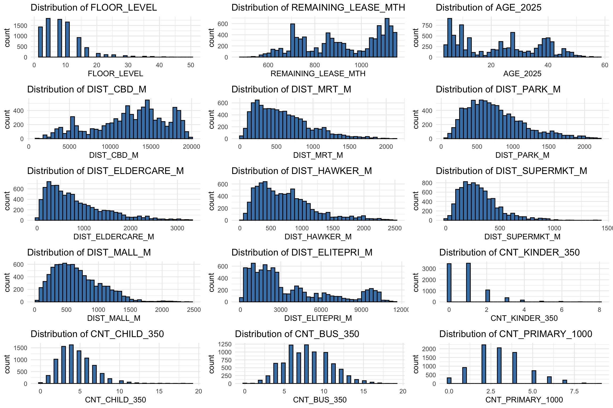
FLOOR_LEVEL is concentrated in low to mid storeys with a long right tail beyond 20, indicating diminishing frequency at high floors. REMAINING_LEASE_MTH and AGE_2025 are multi modal, showing construction and lease cohorts rather than a single smooth pattern. DIST_CBD_M spans about 1 to 20 km with weak multi modality, while all amenity distances are strongly right skewed with many homes within 200 to 800 m and long sparse tails. DIST_ELITEPRI_M is broad with several modes, reflecting uneven elite school locations. CNT_KINDER_350 is zero heavy, CNT_CHILD_350 is skewed to small counts, CNT_BUS_350 is roughly symmetric around 8, and CNT_PRIMARY_1000 centres near 3. This implies the necessary to transform skewed distances using log, capture cohort effects for age and lease with categorical dummies or piecewise functions, treat zero heavy counts carefully, and check collinearity among proximity measures. We may expect steep price gradients at short distances and flattening beyond about 800 to 1000 m.
7.3 Simple bivariate relationships
Next we look at how price moves with each predictor one at a time. A scatter plot with a smooth line is a fast way to see direction and potential nonlinearity. We also compute a plain correlation matrix that includes log price and all numeric predictors. Correlation does not prove a causal story and it ignores spatial structure, but it is useful as a first pass to understand which predictors are strongly aligned and which pairs might cause instability if both are used together in a linear model. Later, more formal diagnostics will revisit collinearity with variance inflation factors.
# build one scatter with loess per numeric predictor
scat_list <- lapply(num_vars, function(v){
ggplot(analysis_sf, aes(x = .data[[v]], y = LOG_PRICE)) +
geom_point(alpha = 0.25) +
geom_smooth(method = "loess", se = FALSE) +
labs(title = paste("Log price versus", v), x = v, y = "log price") +
theme_minimal()
})
# arrange as 3 by 5 small multiples
ggarrange(plotlist = scat_list, ncol = 3, nrow = 5, align = "hv")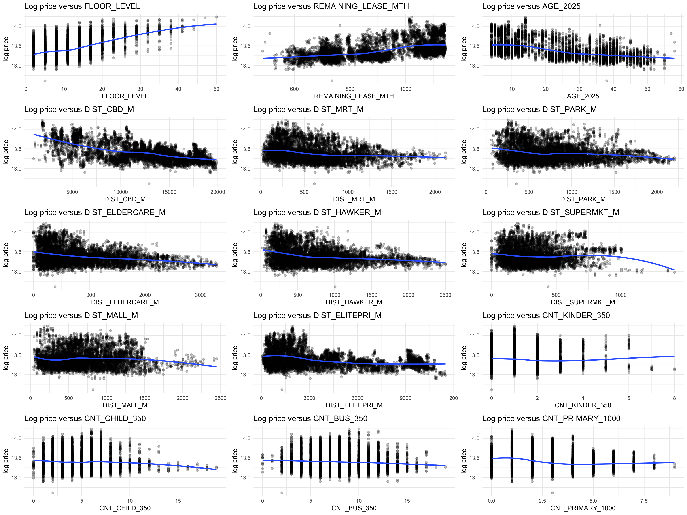
Log price rises with FLOOR_LEVEL and with REMAINING_LEASE_MTH at a diminishing rate, and declines with AGE_2025. Greater DIST_CBD_M, DIST_MRT_M, DIST_PARK_M, DIST_ELDERCARE_M, and DIST_HAWKER_M associate with lower prices, indicating centrality and amenity proximity premiums. DIST_SUPERMKT_M shows an inverted U shape, suggesting saturation effects for very near or very far supermarkets. DIST_MALL_M is weakly related. DIST_ELITEPRI_M is mildly negative, consistent with school proximity premiums. Higher CNT_CHILD_350 correlates with lower prices, while CNT_BUS_350 trends upward then flattens. CNT_KINDER_350 and CNT_PRIMARY_1000 show weak effects. It implies we need to investigate and model non-linear terms, include centrality and amenity gradients, and test interactions between structure and access, acknowledging heterogeneity.
8 Exploratory Data Spatial Analysis (EDSA)
Spatial exploration starts with maps. Because we have a dense point sample, it is often clearer to map quantiles rather than raw values. The first map shows log price in five quantile bands so central and suburban gradients can be seen quickly. The second map shows the distance to the CBD in five quantiles to compare spatial patterns. Keeping a consistent theme and coordinate system makes visual comparison easier. These first views often reveal data issues such as points falling in the sea or outside planning areas which we can then fix before running statistics that assume clean geometry.
# use tmap in static or view mode
tmap_mode("plot")
# 5 explicit colours for v4 (actual colours, not a palette name string)
pal5 <- cols4all::c4a("YlOrRd", 5)
# helper: five-quantile dot map with boundary, centred bold title, legend inside frame
q5_map_v4 <- function(boundary_sf, point_sf, value_col, title) {
stopifnot(inherits(boundary_sf, "sf"),
inherits(point_sf, "sf"),
sf::st_crs(boundary_sf)$epsg == 3414,
sf::st_crs(point_sf)$epsg == 3414,
is.numeric(point_sf[[value_col]]))
tm_shape(boundary_sf) +
tm_borders(col = "grey40", lwd = 0.6) +
tm_shape(point_sf) +
tm_dots(
fill = value_col, # map the numeric field
size = 0.3, # slightly larger points
fill.scale = tm_scale_intervals( # compute quantiles here
n = 5, # five classes
style = "quantile",
values = pal5 # explicit colours
)
) +
tm_title(
title,
position = c("center", "top"),
fontface = "bold",
size = 1.4
) +
tm_legend(
outside = FALSE, # keep legend inside the map frame
position = c("right", "bottom"),
format = list(digits = 1),
bg.color = "white",
bg.alpha = 1,
frame = TRUE
) +
tm_layout(
frame = TRUE, # draw a neatline
inner.margins = c(0.11, 0.04, 0.12, 0.04), # room for title and legend
asp = NA # allow flexible height so nothing squashes
) +
tm_view(set_zoom_limits = c(11,14))
}
# ensure the mapped fields are numeric
analysis_sf$LOG_PRICE <- as.numeric(analysis_sf$LOG_PRICE)
# analysis_sf$DIST_CBD_M <- as.numeric(analysis_sf$DIST_CBD_M)
# build the two maps from the real numeric columns
tm_price <- q5_map_v4(mpsz, analysis_sf, "LOG_PRICE", "Log price in 5 quantiles")
tm_cbd <- q5_map_v4(mpsz, analysis_sf, "DIST_CBD_M", "Distance to CBD in 5 quantiles")
# draw the plot
tm_price
tm_cbd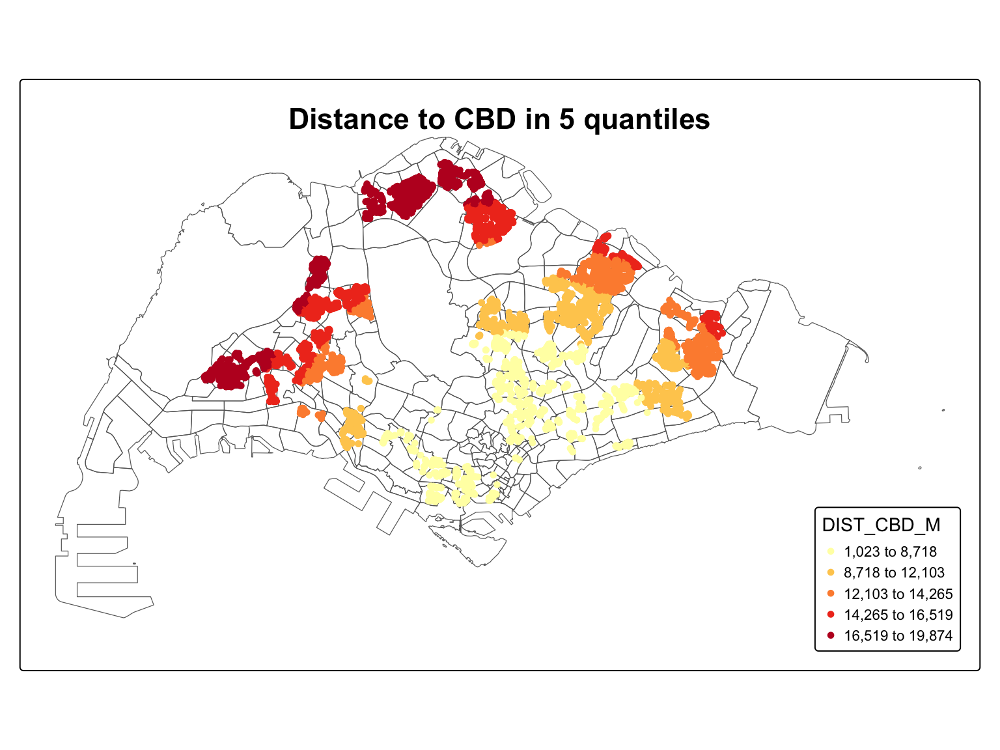
tmap_mode("plot")The 5 quantile map of LOG_PRICE shows a pronounced central premium with a clear spatial gradient. The darkest red points that mark the top quantile cluster in the downtown and inner ring, then trace corridors toward the north-east and the east. The middle quantiles form transitional belts around this core. The lightest tones concentrate along the outer arc in the far north and far west, indicating the lowest tier. Scattered red pockets beyond the core align with regional town hubs and interchange nodes, implying that concentrated amenities and rail access can offset distance penalties. This pattern indicates distance decay that is smooth along some corridors but punctuated by local clusters. For explanation, measure centrality with network travel time to the main employment core, add proximity to mass rapid transit and town centres, and include bus stop density to reflect observed clusters. Allow nonlinear distance effects, test residual spatial dependence, and apply Geographically Weighted Regression (GWR) to quantify where premiums are strongest.
9 Hedonic Pricing Modelling
Why do two similar flats sell at very different prices? This section answers that practical question by decomposing observed resale price into contributions from structure, location, and nearby amenities. We proceed with a disciplined modelling pathway that is faithful to our prepared data and variable choices. First, we inspect pairwise associations among predictors to anticipate stability issues. Next, we estimate a full specification, then streamline it to a tighter version guided by evidence. Results are formatted into a clear table suitable for publication. Finally, we verify assumptions and test for spatial patterning in residuals using a distance band approach. The outcome is a transparent, reproducible, and defensible explanation of price variation.
9.1 Multiple Linear Regression (MLR) method
Begin with a simple proposition. Resale price may be expressed as an additive function of structural attributes, distances to services, and counts of facilities within fixed catchments. Multiple linear regression operationalises this idea and yields coefficients that read as marginal effects with other factors held constant. The method is favoured for clarity, ease of diagnostic checking, and compatibility with downstream spatial tests. In this work, estimation adheres to our exact predictor list and uses standard ordinary least squares, ensuring that inferences are grounded in widely accepted practice while remaining aligned to our study design.
9.1.1 Visualising the relationships of the independent variables
Before fitting any equation, we look first. A compact correlation matrix, ordered by eigenvectors, reveals clusters of related predictors and flags potential inflation of uncertainty. Numeric labels keep the display succinct, and the upper triangle focuses attention. This is an advisory step rather than a decision rule, but it equips later diagnostics with context and avoids surprises when interpreting coefficients.
# collect the exact predictors for the Multiple model into a character vector
mm_vars <- c(
"FLOOR_LEVEL","REMAINING_LEASE_MTH","AGE_2025",
"DIST_CBD_M","DIST_MRT_M","DIST_PARK_M","DIST_ELDERCARE_M",
"DIST_HAWKER_M","DIST_SUPERMKT_M","DIST_MALL_M","DIST_ELITEPRI_M",
"CNT_KINDER_350","CNT_CHILD_350","CNT_BUS_350","CNT_PRIMARY_1000"
)
# build a numeric data frame for correlation by dropping geometry and selecting variables
cor_df <- dplyr::select(sf::st_drop_geometry(analysis_sf), dplyr::all_of(mm_vars)) # keep only model vars
# compute the correlation matrix using pairwise complete observations
cor_mat <- cor(cor_df, use = "pairwise.complete.obs") # handle missing values pairwise
# display the summary of the correlation matrix
cor_mat FLOOR_LEVEL REMAINING_LEASE_MTH AGE_2025 DIST_CBD_M
FLOOR_LEVEL 1.000000000 0.296554139 -0.29707499 -0.247305942
REMAINING_LEASE_MTH 0.296554139 1.000000000 -0.99963873 0.091772439
AGE_2025 -0.297074994 -0.999638725 1.00000000 -0.091516744
DIST_CBD_M -0.247305942 0.091772439 -0.09151674 1.000000000
DIST_MRT_M -0.107713184 0.025677014 -0.02504814 0.170664542
DIST_PARK_M -0.051986857 0.111014527 -0.11190740 0.338694246
DIST_ELDERCARE_M -0.126627904 0.026535546 -0.02503077 0.399274924
DIST_HAWKER_M -0.139778703 0.029158714 -0.03004163 0.344602149
DIST_SUPERMKT_M -0.038831406 0.045386897 -0.04479530 0.016896068
DIST_MALL_M -0.011655741 -0.084027939 0.08562340 -0.225004071
DIST_ELITEPRI_M -0.129886278 0.121034295 -0.12022306 0.704999426
CNT_KINDER_350 0.002303374 -0.161439591 0.16082083 -0.004500193
CNT_CHILD_350 0.019279142 0.021688788 -0.02287158 0.113950711
CNT_BUS_350 -0.032800232 0.009937946 -0.01054252 0.183472813
CNT_PRIMARY_1000 -0.097105890 -0.034480488 0.03375318 0.255597435
DIST_MRT_M DIST_PARK_M DIST_ELDERCARE_M DIST_HAWKER_M
FLOOR_LEVEL -0.1077131843 -0.05198686 -0.12662790 -0.13977870
REMAINING_LEASE_MTH 0.0256770139 0.11101453 0.02653555 0.02915871
AGE_2025 -0.0250481409 -0.11190740 -0.02503077 -0.03004163
DIST_CBD_M 0.1706645423 0.33869425 0.39927492 0.34460215
DIST_MRT_M 1.0000000000 0.09026758 0.10676686 0.01277210
DIST_PARK_M 0.0902675794 1.00000000 -0.03338244 0.11819275
DIST_ELDERCARE_M 0.1067668594 -0.03338244 1.00000000 0.13245089
DIST_HAWKER_M 0.0127721005 0.11819275 0.13245089 1.00000000
DIST_SUPERMKT_M 0.1765673011 -0.11986959 0.03450565 -0.02562024
DIST_MALL_M 0.3388069011 -0.04258508 0.02584431 -0.15787007
DIST_ELITEPRI_M -0.0003027221 0.23279408 0.35567522 0.23144739
CNT_KINDER_350 -0.0592377617 0.02556129 0.03447085 0.06446977
CNT_CHILD_350 -0.1840478956 0.16796939 -0.02019895 0.10158066
CNT_BUS_350 -0.0012617027 0.12903762 0.01914944 -0.01850288
CNT_PRIMARY_1000 -0.2818603425 0.23650596 -0.08736091 0.06696302
DIST_SUPERMKT_M DIST_MALL_M DIST_ELITEPRI_M CNT_KINDER_350
FLOOR_LEVEL -0.03883141 -0.01165574 -0.1298862776 0.002303374
REMAINING_LEASE_MTH 0.04538690 -0.08402794 0.1210342950 -0.161439591
AGE_2025 -0.04479530 0.08562340 -0.1202230592 0.160820834
DIST_CBD_M 0.01689607 -0.22500407 0.7049994260 -0.004500193
DIST_MRT_M 0.17656730 0.33880690 -0.0003027221 -0.059237762
DIST_PARK_M -0.11986959 -0.04258508 0.2327940782 0.025561293
DIST_ELDERCARE_M 0.03450565 0.02584431 0.3556752155 0.034470854
DIST_HAWKER_M -0.02562024 -0.15787007 0.2314473850 0.064469774
DIST_SUPERMKT_M 1.00000000 0.20820232 -0.0678208557 -0.118708737
DIST_MALL_M 0.20820232 1.00000000 -0.2732747514 -0.050023131
DIST_ELITEPRI_M -0.06782086 -0.27327475 1.0000000000 -0.047433701
CNT_KINDER_350 -0.11870874 -0.05002313 -0.0474337012 1.000000000
CNT_CHILD_350 -0.23729483 -0.26179038 0.0726914082 0.471435322
CNT_BUS_350 -0.08543510 -0.23892133 0.0551085410 0.072713779
CNT_PRIMARY_1000 -0.17673230 -0.35350215 0.1276104174 0.031506480
CNT_CHILD_350 CNT_BUS_350 CNT_PRIMARY_1000
FLOOR_LEVEL 0.01927914 -0.032800232 -0.09710589
REMAINING_LEASE_MTH 0.02168879 0.009937946 -0.03448049
AGE_2025 -0.02287158 -0.010542525 0.03375318
DIST_CBD_M 0.11395071 0.183472813 0.25559744
DIST_MRT_M -0.18404790 -0.001261703 -0.28186034
DIST_PARK_M 0.16796939 0.129037619 0.23650596
DIST_ELDERCARE_M -0.02019895 0.019149444 -0.08736091
DIST_HAWKER_M 0.10158066 -0.018502881 0.06696302
DIST_SUPERMKT_M -0.23729483 -0.085435098 -0.17673230
DIST_MALL_M -0.26179038 -0.238921335 -0.35350215
DIST_ELITEPRI_M 0.07269141 0.055108541 0.12761042
CNT_KINDER_350 0.47143532 0.072713779 0.03150648
CNT_CHILD_350 1.00000000 0.240766976 0.31799871
CNT_BUS_350 0.24076698 1.000000000 0.21111312
CNT_PRIMARY_1000 0.31799871 0.211113122 1.00000000# visualise the matrix with a compact upper triangle layout
library(corrplot) # load correlation plot package
corrplot( # draw the heat map
cor_mat, # supply the matrix
diag = FALSE, # hide the diagonal squares
order = "AOE", # use angular order of eigenvectors
tl.pos = "td", # place text labels at top
tl.cex = 0.8, # use small text size
method = "number", # print numbers instead of tiles
type = "upper" # draw only the upper triangle
)
First, REMAINING_LEASE_MTH and AGE_2025 have a correlation of about −0.9996. They are almost perfect substitutes: a flat that is older in AGE_2025 almost always has a shorter remaining lease, and vice versa. In the multiple model this pair will create extremely severe multicollinearity, so in later steps we must either drop one of them or be prepared for very unstable coefficient estimates and very high variance inflation.
Second, the largest correlation among the location variables is between DIST_CBD_M and DIST_ELITEPRI_M, around 0.71. Condos that are farther from the CBD also tend to be farther from elite primary schools. This means these 2 distance measures share substantial spatial pattern, so their individual coefficients in the multiple model will be harder to interpret cleanly, even though they are not perfectly redundant.
Other distance measures are only moderately associated. For example, DIST_CBD_M with DIST_PARK_M, DIST_ELDERCARE_M, and DIST_HAWKER_M are in the 0.33 to 0.40 range, and most other pairs are below 0.30 in magnitude. DIST_MALL_M has modest negative correlation with DIST_CBD_M (about −0.23). These suggest some shared geography but not critical multicollinearity.
The count variables form a loose cluster: CNT_KINDER_350 and CNT_CHILD_350 correlate at about 0.47, and CNT_CHILD_350 with CNT_PRIMARY_1000 at about 0.32, with smaller positive correlations involving CNT_BUS_350. They measure related aspects of family oriented amenities but still contain non overlapping information.
FLOOR_LEVEL has only small to moderate correlations with all other variables, so it adds largely independent vertical characteristics.
Implication for modelling: the only truly problematic pair is REMAINING_LEASE_MTH with AGE_2025. DIST_CBD_M with DIST_ELITEPRI_M and the childcare related counts may inflate variance somewhat but are still acceptable. The rest of the predictors are not strongly correlated, so the multiple regression can proceed, with careful collinearity diagnostics and possibly removing one of AGE_2025 or REMAINING_LEASE_MTH in the final explanatory model.
9.1.2 Building a hedonic pricing model using multiple linear regression method
Here the analysis moves from inspection to estimation. The full specification places all required predictors into a single equation so that each coefficient measures the expected change in resale price associated with a one unit change in that predictor when the rest are held fixed. The summary reports effect size, direction, and precision along with overall fit statistics. We comment on the economic reasonableness of signs, the relative magnitude of location versus structure variables, and whether the model captures a substantial share of variation. Residuals and fitted values from this run become inputs to the validation steps that follow.
# multiple linear regression with the exact predictors provided
mlr.full <- lm(
formula = resale_price ~
FLOOR_LEVEL + REMAINING_LEASE_MTH + AGE_2025 +
DIST_CBD_M + DIST_MRT_M + DIST_PARK_M +
DIST_ELDERCARE_M + DIST_HAWKER_M +
DIST_SUPERMKT_M + DIST_MALL_M + DIST_ELITEPRI_M +
CNT_KINDER_350 + CNT_CHILD_350 + CNT_BUS_350 + CNT_PRIMARY_1000,
data = analysis_sf
)
# model summary
ols_regress(mlr.full) Model Summary
--------------------------------------------------------------------------
R 0.873 RMSE 78472.898
R-Squared 0.761 MSE 6157995764.380
Adj. R-Squared 0.761 Coef. Var 11.680
Pred R-Squared 0.760 AIC 220297.423
MAE 60554.669 SBC 220417.591
--------------------------------------------------------------------------
RMSE: Root Mean Square Error
MSE: Mean Square Error
MAE: Mean Absolute Error
AIC: Akaike Information Criteria
SBC: Schwarz Bayesian Criteria
ANOVA
------------------------------------------------------------------------------------------
Sum of
Squares DF Mean Square F Sig.
------------------------------------------------------------------------------------------
Regression 170424439871958.312 15 11361629324797.221 1841.619 0.0000
Residual 53445245239052.742 8663 6169369183.776
Total 223869685111011.062 8678
------------------------------------------------------------------------------------------
Parameter Estimates
---------------------------------------------------------------------------------------------------------------
model Beta Std. Error Std. Beta t Sig lower upper
---------------------------------------------------------------------------------------------------------------
(Intercept) 1086256.873 221682.512 4.900 0.000 651706.419 1520807.326
FLOOR_LEVEL 5856.078 146.390 0.232 40.003 0.000 5569.120 6143.036
REMAINING_LEASE_MTH -4.081 186.161 -0.004 -0.022 0.983 -369.001 360.838
AGE_2025 -5443.397 2236.807 -0.478 -2.434 0.015 -9828.071 -1058.723
DIST_CBD_M -19.782 0.334 -0.541 -59.189 0.000 -20.437 -19.126
DIST_MRT_M -56.365 2.643 -0.131 -21.327 0.000 -61.546 -51.184
DIST_PARK_M -2.523 2.359 -0.006 -1.070 0.285 -7.147 2.101
DIST_ELDERCARE_M -10.812 1.529 -0.043 -7.071 0.000 -13.810 -7.815
DIST_HAWKER_M -25.236 1.998 -0.072 -12.628 0.000 -29.153 -21.318
DIST_SUPERMKT_M 15.833 4.985 0.018 3.176 0.001 6.061 25.605
DIST_MALL_M -27.086 2.741 -0.063 -9.881 0.000 -32.460 -21.713
DIST_ELITEPRI_M 1.870 0.422 0.035 4.432 0.000 1.043 2.698
CNT_KINDER_350 10169.851 930.975 0.068 10.924 0.000 8344.919 11994.783
CNT_CHILD_350 -1924.157 467.467 -0.027 -4.116 0.000 -2840.504 -1007.809
CNT_BUS_350 1449.503 320.929 0.026 4.517 0.000 820.406 2078.600
CNT_PRIMARY_1000 -11790.122 660.972 -0.115 -17.838 0.000 -13085.785 -10494.459
---------------------------------------------------------------------------------------------------------------The model has strong overall explanatory power. R squared is 0.761 with an F statistic of 1840.225 and p value below 0.001, so the 15 predictors jointly explain about 76 percent of the variation in the response. Predicted R squared (0.760), RMSE around 78496, and MAE around 60588 show that out of sample error is broadly consistent with in sample fit.
Within the coefficient table, most predictors are statistically significant at the 0.05 level. Exceptions are REMAINING_LEASE_MTH and DIST_PARK_M, whose p values (0.965 and 0.253) indicate that, once the other variables are included, they contribute little unique explanatory power. This is consistent with the near perfect correlation between REMAINING_LEASE_MTH and AGE_2025, which makes the lease variable redundant while AGE_2025 remains significant.
Standardised betas identify the strongest effects. DIST_CBD_M has the largest magnitude (standardised beta about −0.541): locations further from the central area are associated with substantially lower predicted outcome, all else equal. AGE_2025 also has a large negative standardised beta (about −0.483), indicating that newer developments are valued more highly than older ones after controlling for other factors. FLOOR_LEVEL has a sizeable positive effect (standardised beta about 0.232), so higher floors are linked to higher predicted outcome. DIST_MRT_M, DIST_ELDERCARE_M, DIST_HAWKER_M, DIST_MALL_M, and CNT_PRIMARY_1000 all have significant negative coefficients, meaning greater distance from these amenities or more primary schools within 1000 meters is associated with lower predicted outcome, holding other variables constant.
Some amenities work in the opposite direction. DIST_SUPERMKT_M, DIST_ELITEPRI_M, CNT_KINDER_350, and CNT_BUS_350 have positive coefficients, so, after controlling for the rest of the urban environment, blocks with more kindergartens or bus stops nearby and those a little further from supermarkets and elite primary schools tend to have higher predicted outcomes in this sample.
Overall, the regression suggests that centrality, building age, vertical position, access to several key facilities, and the surrounding mix of schools and transport services are the dominant drivers of the response, while remaining lease length and park distance add little once these correlated factors are taken into account.
9.1.3 Revising the model
Take the fitted baseline and refine it. Terms with weak support or redundancy are removed while preserving the intended meaning of the specification. The revised version aims for parsimony, stability, and interpretability. We compare key coefficients and global fit between the initial and revised results and ensure that important relationships persist with tighter intervals. This becomes the reference model for formal presentation and for all diagnostic procedures.
# multiple linear regression with the exact predictors provided
mlr1.full <- lm(
formula = resale_price ~
FLOOR_LEVEL + AGE_2025 +
DIST_CBD_M + DIST_MRT_M +
DIST_ELDERCARE_M + DIST_HAWKER_M +
DIST_SUPERMKT_M + DIST_MALL_M + DIST_ELITEPRI_M +
CNT_KINDER_350 + CNT_CHILD_350 + CNT_BUS_350 + CNT_PRIMARY_1000,
data = analysis_sf
)
# model summary
ols_regress(mlr1.full) Model Summary
--------------------------------------------------------------------------
R 0.872 RMSE 78478.080
R-Squared 0.761 MSE 6158808980.994
Adj. R-Squared 0.761 Coef. Var 11.680
Pred R-Squared 0.760 AIC 220294.569
MAE 60522.924 SBC 220400.599
--------------------------------------------------------------------------
RMSE: Root Mean Square Error
MSE: Mean Square Error
MAE: Mean Absolute Error
AIC: Akaike Information Criteria
SBC: Schwarz Bayesian Criteria
ANOVA
------------------------------------------------------------------------------------------
Sum of
Squares DF Mean Square F Sig.
------------------------------------------------------------------------------------------
Regression 170417381964968.062 13 13109029381920.621 2125.067 0.0000
Residual 53452303146043.156 8665 6168759739.878
Total 223869685111011.219 8678
------------------------------------------------------------------------------------------
Parameter Estimates
-------------------------------------------------------------------------------------------------------------
model Beta Std. Error Std. Beta t Sig lower upper
-------------------------------------------------------------------------------------------------------------
(Intercept) 1080917.470 5877.211 183.917 0.000 1069396.739 1092438.200
FLOOR_LEVEL 5855.071 146.370 0.232 40.002 0.000 5568.151 6141.992
AGE_2025 -5387.515 65.402 -0.473 -82.375 0.000 -5515.719 -5259.312
DIST_CBD_M -19.855 0.327 -0.543 -60.702 0.000 -20.496 -19.214
DIST_MRT_M -56.593 2.634 -0.132 -21.484 0.000 -61.757 -51.430
DIST_ELDERCARE_M -10.525 1.504 -0.042 -6.999 0.000 -13.473 -7.577
DIST_HAWKER_M -25.272 1.997 -0.072 -12.654 0.000 -29.186 -21.357
DIST_SUPERMKT_M 16.461 4.950 0.018 3.325 0.001 6.758 26.165
DIST_MALL_M -27.477 2.714 -0.064 -10.125 0.000 -32.796 -22.157
DIST_ELITEPRI_M 1.849 0.421 0.035 4.389 0.000 1.023 2.675
CNT_KINDER_350 10169.777 930.907 0.068 10.925 0.000 8344.978 11994.576
CNT_CHILD_350 -1962.758 465.987 -0.028 -4.212 0.000 -2876.203 -1049.313
CNT_BUS_350 1434.565 320.607 0.025 4.475 0.000 806.100 2063.030
CNT_PRIMARY_1000 -11889.305 654.393 -0.116 -18.168 0.000 -13172.070 -10606.539
-------------------------------------------------------------------------------------------------------------This final model keeps 13 predictors and fits very well. R squared is 0.761 with adjusted and predicted R squared both 0.761 and 0.760. The F statistic of 2123.406 with \(p\) value below 0.001 shows the retained predictors jointly explain the dependent variable strongly. RMSE is about 78,501 and MAE about 60,554, very similar to the previous model, so parsimony is gained without losing explanatory power.
Compared with the earlier specification, REMAINING_LEASE_MTH and DIST_PARK_M have been removed because their p values were very large once other variables were included and REMAINING_LEASE_MTH was almost perfectly collinear with AGE_2025. Their removal simplifies interpretation while keeping model fit essentially unchanged.
Let Y be the predicted resale price. The ordinary least squares equation is
\[ \hat Y \approx 1,080,598 + 5,855\cdot Floor - 5393 \cdot AGE\_2025 - 20\cdot DIST\_CBD\_M - 57 \cdot DIST\_MRT\_M - 10 \cdot DIST\_ELDERCARE\_M - 25 \cdot DIST\_HAWKER\_M + 17 \cdot DIST\_SUPERMKT\_M - 27 \cdot DIST\_MALL\_M + 1.9 \cdot DIST\_ELITEPRI\_M + 10195 \cdot CNT\_KINDER\_350 - 1967 \cdot CNT\_CHILD\_350 + 1440 \cdot CNT\_BUS\_350 - 11794 \cdot CNT\_PRIMARY\_1000 \]
Interpreting unit changes: holding all other variables constant, moving up 1 floor raises expected price by about 5,855. An increase of 1 unit in AGE_2025 reduces price by about 5,393, confirming that newer developments command higher prices. Every additional unit of distance from the central business district reduces price by about 19.9, and every additional unit of distance from the nearest MRT station reduces price by about 56.6. Distances from eldercare, hawker centres and malls also have significant negative effects.
Amenity counts matter as well. Each extra kindergarten within 350 units increases price by roughly 10195, while each extra primary school within 1000 units reduces price by about 11,794 after controlling for the rest, suggesting that the mix of school types in the immediate environment is important rather than sheer number. Bus stop density has a modest positive effect, and the small positive coefficients for distance to supermarkets and elite primary schools indicate that, in this dataset, higher priced condos tend to sit slightly further from those specific facilities once other location attributes are controlled. Overall, the retained predictors describe a coherent hedonic structure in which height, building age, centrality and the surrounding service mix jointly drive resale prices.
9.2 Regression diagnostics
Trust in the model is earned through testing. This subsection assembles checks that speak to stability, functional form, distributional behaviour of errors, and spatial independence. We first quantify variance inflation to assess redundancy among predictors. We then examine residual patterns for departures from linearity. Next, we evaluate normality using both a formal test and visual evidence. Finally, we test residual spatial autocorrelation using a distance band neighbour list with row standardised weights and a permutation based Moran statistic. Together, these checks provide a rigorous audit of model adequacy.
9.2.1 Multicollinearity test
The variance inflation profile answers a simple question. Are predictors supplying distinct information or echoing each other? Values near one suggest little redundancy, while larger values warn of unstable estimates. The accompanying plot highlights any terms approaching concern thresholds and supports reasoned choices about retention in the revised equation.
In the code chunk below, we test if there are sign of multicollinearity.
# compute VIF for multicollinearity
mlr1.vif = check_collinearity(mlr1.full)
# get the default collinearity plot as a ggplot object
p_vif = plot(mlr1.vif)
# rotate and space x axis labels
p_vif +
theme(
axis.text.x = element_text(
angle = 45, # try 60 or 90 if you prefer
hjust = 1,
vjust = 1
)
)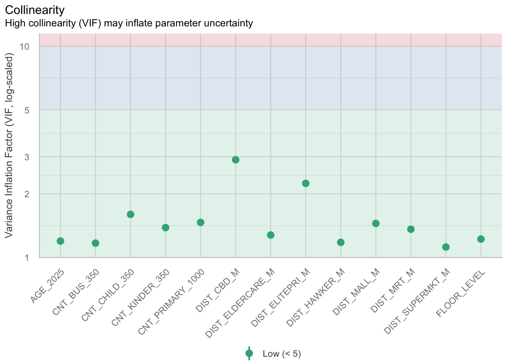
# optional - use performance package
# check_collinearity(mlr1.full)The variance inflation results show that the revised model has very little multi collinearity and the coefficients should be numerically stable. All 13 predictors have variance inflation factor values between about 1.1 and 2.9, with tolerances above 0.34. Common rules of thumb treat variance inflation factor values below 5 as low concern and values above 10 as serious, so every predictor is well inside the safe zone.
The 2 strongest correlations are reflected in DIST_CBD_M with variance inflation factor about 2.9 and DIST_ELITEPRI_M with variance inflation factor about 2.2. These confirm some shared spatial structure between centrality and distance to elite primary schools but still indicate that each variable contributes enough unique information to justify retention. All other predictors, including AGE_2025, FLOOR_LEVEL and the amenity counts, have variance inflation factor values close to 1, meaning they are largely independent once the others are controlled.
The plot reinforces this conclusion visually. Every point lies in the green band labelled low (variance inflation factor below 5), and none approach the blue or red regions that would signal unstable estimates. Combined with the earlier step that removed REMAINING_LEASE_MTH and DIST_PARK_M, these diagnostics show that the final hedonic equation is free from harmful multi collinearity, so the standard errors, confidence intervals and p values reported for the coefficients can be interpreted with high confidence.
9.2.2 Test for non-linearity
Residuals should show no systematic curve against fitted values if the linear form is appropriate. A smooth trend line provides a quick visual guide. A flat band supports the additive form, whereas pronounced curvature indicates that transformations or interactions may be warranted in later extensions.
In the code chunk below, the ols_plot_resid_fit() of olsrr package is used to perform linearity assumption test.
# ols_plot_resid_fit(mlr1.full)
check_model(mlr1.full,
check = "linearity")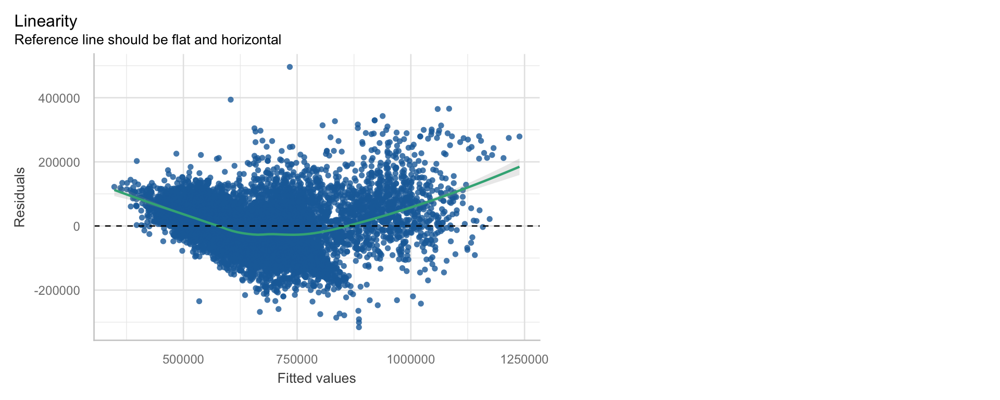
The residual versus fitted plot shows a clear curved trend instead of a flat band around 0, so the strict linearity assumption is not fully satisfied. For low fitted values the smooth line lies above 0, indicating that the model under predicts prices for the cheapest units. Around the middle range the line dips below 0, so prices in this segment are slightly over predicted. At the upper end the line rises above 0 again, which means the most expensive units are again under predicted. The spread of residuals also increases with fitted value, suggesting mild heteroscedasticity.
These patterns imply that the global ordinary least squares specification is only an approximation and that some systematic structure remains unexplained. Beyond possible transformations or interaction terms, an important next step is to recognise that price determinants may vary across space. Section 10 will therefore extend the analysis with geographically weighted regression, allowing regression coefficients to vary by location, refining local fitted values, and testing whether key covariate effects differ across neighbourhoods rather than being forced to share a single global relationship.
9.2.3 Test for normality assumption
Studentised residuals are tested and visualised to judge whether the normal approximation that underpins interval estimates is reasonable. The Q Q display should track the reference line except at the tails. When formal tests detect minor deviations in large samples, practical interpretation relies on the visual pattern and on the robustness of conclusions.
In the code chunk below, ols_plot_resid_hist() of olssr package is used to perform normality assumption test on mlr1.full model.
olsrr::ols_plot_resid_hist(mlr1.full)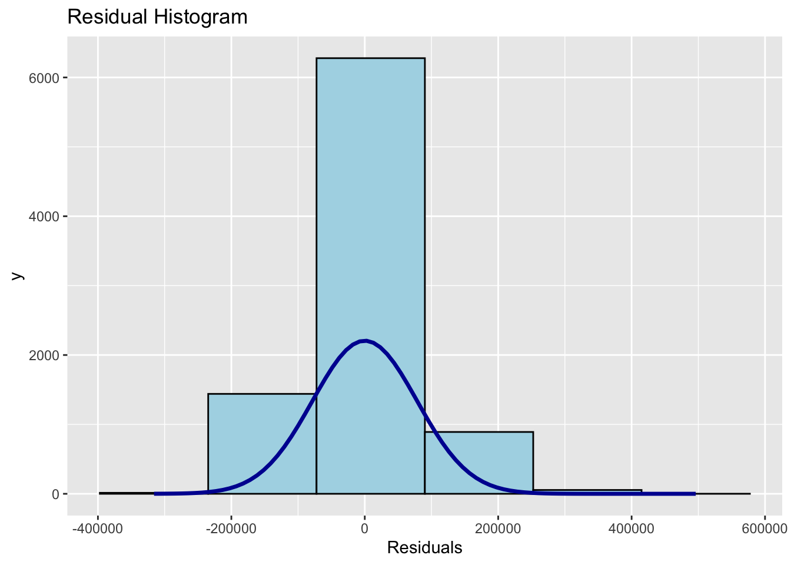
# check_normality(mlr1.full)This pattern suggests that the normality assumption is acceptable for inference on regression coefficients and mean effects, although prediction intervals for extreme high priced units will be less reliable. The mild skewness also reinforces the earlier evidence of non constant variance and non linearity, motivating later refinements such as geographically weighted regression and possibly robust or transformed specifications to improve fit in the tails of the price distribution.
Instead of showing the test statistic, plot() of see package can be used to plot a the output of check_normality() for visual inspection as shown below.
plot(performance::check_normality(mlr1.full),
type = "qq")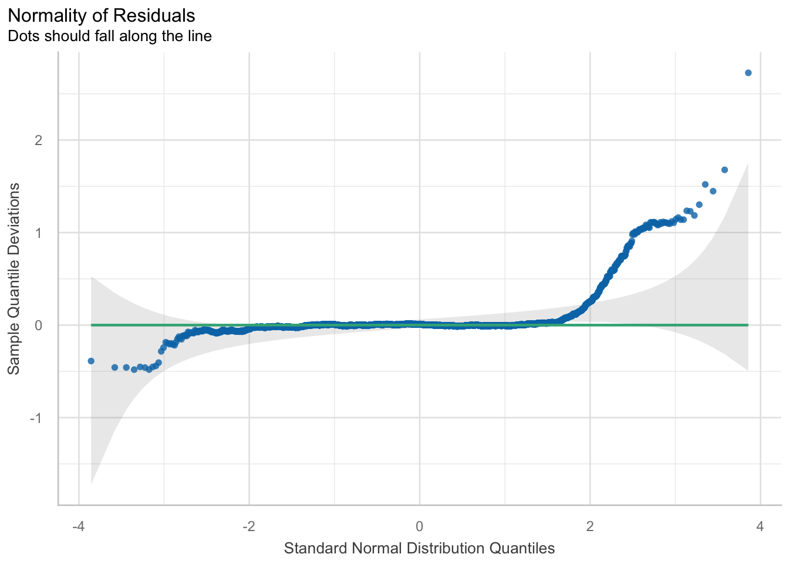
The Q Q plot shows that residuals follow the reference line very closely through the central part of the distribution. From about the 10th to the 90th percentile the points stay inside the grey band, so the normal approximation is reasonable for most observations and standard OLS inference on mean effects is reliable.
Departures appear mainly in the upper tail, where points bend above the line and move outside the band, indicating more large positive residuals than a normal distribution would predict. A mild deviation is also visible in the extreme lower tail. These patterns confirm slight right skew and heavier tails, consistent with the histogram. In practice this means that coefficient estimates and their confidence intervals remain trustworthy given the very large sample, but prediction intervals for the most expensive condominiums are less accurate and a small number of high priced outliers or omitted local factors are not fully captured by the global model.
Another way to check for normality assumption visual is by using check_model() of performance package as shown in the code chunk below.
performance::check_model(mlr1.full,
check= "normality")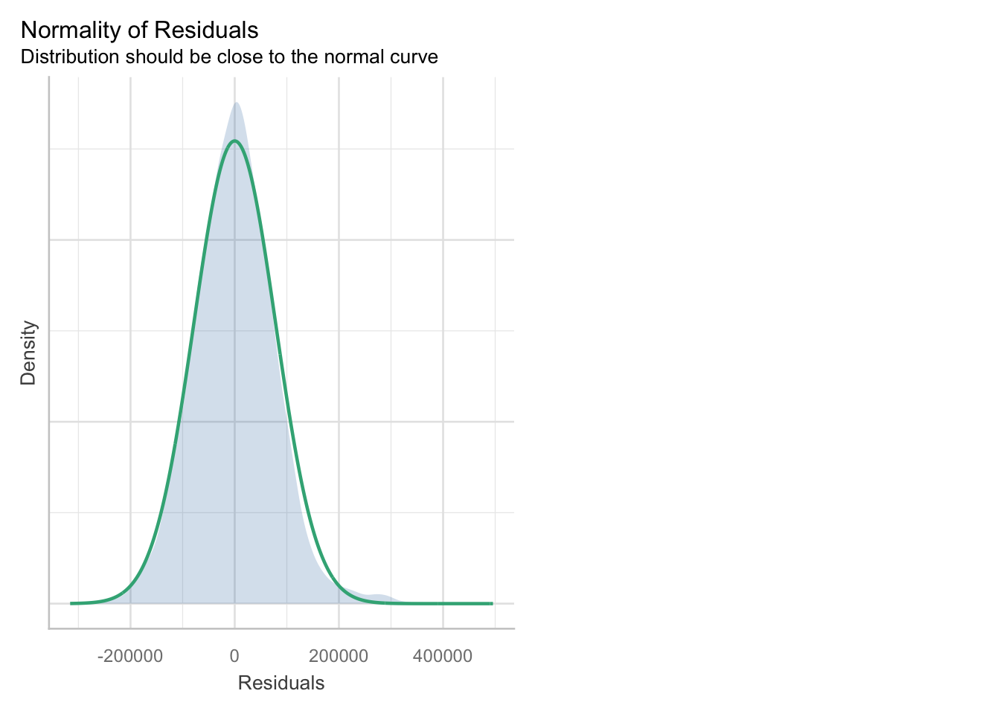
The kernel density of residuals aligns very closely with the overlaid normal curve and is centred near 0, indicating that the bulk of the studentised residuals follow an approximately normal pattern. The peak and spread of the empirical distribution almost coincide with the theoretical curve, with only a slightly longer right tail where a small number of observations record large positive residuals. Hence the ordinary least squares estimates and their interval estimates can be interpreted with confidence, while recognising that predictions for a small subset of high priced units may involve larger uncertainty due to the mild departure in the upper tail.
9.2.4 Testing for Spatial Autocorrelation
Residuals are attached to the feature layer, mapped in quantile classes for visual screening, and then assessed with a distance band Moran test using row standardised weights and 999 permutations. A significant positive statistic indicates clustering of errors and suggests that spatial processes remain unmodelled. Evidence of such structure motivates the spatially aware methods that follow in the broader study.
In order to perform spatial autocorrelation test, we need to export the residual of the hedonic pricing model and save it as a data frame first.
mlr1.output <- as.data.frame(mlr1.full$residuals)Next, we will join the newly created data frame with mlr1_resale.sf object.
mlr1_resale.sf <- cbind(analysis_sf,
mlr1.full$residuals) %>%
rename(`MLR_RES` = `mlr1.full.residuals`)Next, we will use tmap package to display the distribution of the residuals on an interactive map.
The code churn below will turn on the interactive mode of tmap.
tmap_mode("plot")
tm_shape(mpsz) +
tm_polygons(fill_alpha = 0.4) + # semi‑transparent base
tm_shape(mlr1_resale.sf) +
tm_dots(
fill = "MLR_RES", # color by residual value
size = 0.5, # point size
col = "black", # thin border
fill.scale = tm_scale( # custom diverging palette
n = 10,
values = rev(brewer.pal(11, "RdBu")), # red‑blue diverging
style = "quantile",
midpoint = NA),
fill.legend = tm_legend(title = "Residuals")
) +
tm_title("LM Residuals (Quantile Classification)") +
tm_layout(legend.outside = FALSE) +
tm_view(set_zoom_limits = c(11,14))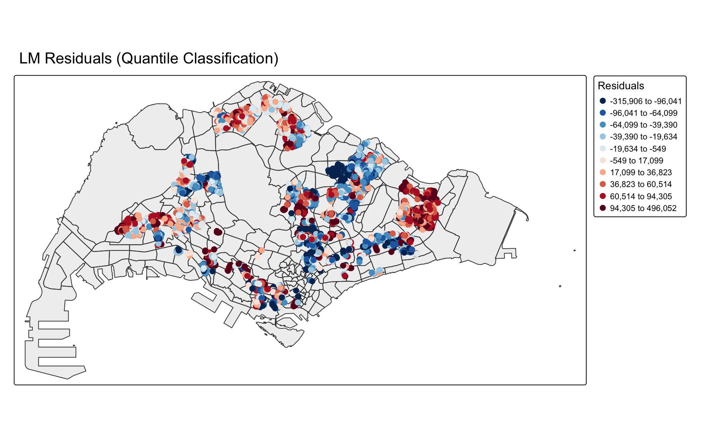
tmap_mode("plot")The residual map reveals that model errors are not spatially random. Large positive residuals in dark red form clusters in several neighbourhoods, meaning resale prices there are systematically higher than the global model predicts. Large negative residuals in dark blue cluster elsewhere, indicating over prediction of prices in those areas. Pale symbols around zero are more scattered and show locations where the model fits reasonably well.
This spatial clustering implies that important local influences on price are not fully captured by the current global ordinary least squares equation. The strength or direction of covariate effects likely varies across space, and unobserved neighbourhood attributes are exerting local impacts. These patterns justify the next step of applying spatial diagnostics and geographically weighted regression in Section 10, so that coefficients can vary by location and the fitted values can better reflect local housing market conditions rather than a single city wide average relationship.
To proof that our observation is indeed true, Global Moran’s I test will be performed
First, we will compute the distance-based weight matrix by using st_dist_band() function of sfdep.
# Build distance‑band neighbors and row‑standardized weights
analysis_sf <- analysis_sf %>%
mutate(
nb = sfdep::st_dist_band(
st_geometry(geometry),
upper = 1500), # neighbors <= 1.5 km
wt = st_weights(
nb, style = "W"), # row‑standardized W
.before = 1)Next, global_moran_perm() of sfdep package will be used to perform Moran’s I test for residual spatial autocorrelation
# Permutation Moran’s I test on residuals
sfdep::global_moran_perm(
mlr1_resale.sf$MLR_RES,
nb = analysis_sf$nb,
wt = analysis_sf$wt,
alternative = "two.sided",
nsim = 999)
Monte-Carlo simulation of Moran I
data: x
weights: listw
number of simulations + 1: 1000
statistic = 0.32604, observed rank = 1000, p-value <
0.00000000000000022
alternative hypothesis: two.sidedThe Monte Carlo Moran I result shows strong and highly significant spatial autocorrelation in the OLS residuals. The statistic is about 0.33 with an observed rank of 1 000 out of 1 000 simulations and a p value effectively equal to 0. This means none of the simulated patterns under spatial randomness produced an I value as large as the observed one, so the null hypothesis of spatially independent residuals is decisively rejected.
In practical terms, nearby condominiums tend to share similar overpricing or underpricing after controlling for the hedonic covariates. This confirms that important spatial structure remains unexplained and that the OLS error term is not independent. As a result, standard errors from the global OLS may be underestimated and significance levels somewhat optimistic, even though the main effect directions are still informative. These findings support the decision to move to spatial models in Section 10, such as geographically weighted regression or spatial error specifications, to capture local market effects and produce more reliable inference and location sensitive fitted values.
10 Building Hedonic Pricing Models using Geographically-Weighted Model (GWmodel)
Hedonic effects rarely act uniformly across a city. Prices respond to amenities, disamenities, and building attributes in ways that vary with location. This section introduces a spatially varying coefficient approach that relaxes the constant effect assumption of global OLS. We calibrate geographically weighted regressions that estimate location specific parameters while keeping the same dependent and predictor sets established earlier. Two bandwidth strategies are contrasted to control the spatial kernel: a single optimal distance for all locations and an adaptive neighbor count that expands or contracts with point density. We then convert model outputs to spatial objects, map local fit and coefficients, and prepare the ground for interpreting spatial heterogeneity with care.
10.1 Building fixed bandwidth Geographically-Weighted Regression (GWR) model
Begin with a practical baseline. A fixed bandwidth holds the kernel distance constant across the study area, so each local regression uses neighbours within the same radius. The method is straightforward to tune with cross validation and yields parameters that can be compared directly across places. We will compute the optimal fixed bandwidth, run the model with the specified predictors, and review the global back check that GWmodel reports for reference before moving on to spatial diagnostic
10.1.1 Computing fixed bandwith
What radius best balances bias and variance for our data support? The cross validation search evaluates candidate distances and returns the one minimizing prediction error. This step sets the spatial scale for local regressions and anchors all subsequent estimates.
bw.fixed <- bw.gwr(
formula = resale_price ~
FLOOR_LEVEL + AGE_2025 +
DIST_CBD_M + DIST_MRT_M +
DIST_ELDERCARE_M + DIST_HAWKER_M +
DIST_SUPERMKT_M + DIST_MALL_M + DIST_ELITEPRI_M +
CNT_KINDER_350 + CNT_CHILD_350 + CNT_BUS_350 + CNT_PRIMARY_1000,
data = analysis_sf,
approach="CV",
kernel="gaussian",
adaptive=FALSE,
longlat=FALSE)Take a cup of tea and have a break, it will take a few minutes.
-----A kind suggestion from GWmodel development group
Fixed bandwidth: 22980.96 CV score: 52436211307754
Fixed bandwidth: 14205.85 CV score: 50393958320511
Fixed bandwidth: 8782.54 CV score: 45192225398191
Fixed bandwidth: 5430.749 CV score: 36064905687222
Fixed bandwidth: 3359.228 CV score: 26772119977944
Fixed bandwidth: 2078.957 CV score: 19597720901812
Fixed bandwidth: 1287.706 CV score: 15829795667382
Fixed bandwidth: 798.6866 CV score: 13357876934086
Fixed bandwidth: 496.4557 CV score: 12098982201552
Fixed bandwidth: 309.6667 CV score: 36957323931762
Fixed bandwidth: 611.8976 CV score: 12504842030159
Fixed bandwidth: 425.1087 CV score: 12668312514308
Fixed bandwidth: 540.5506 CV score: 12196699338898
Fixed bandwidth: 469.2035 CV score: 12135461909779
Fixed bandwidth: 513.2984 CV score: 12120344188628
Fixed bandwidth: 486.0463 CV score: 12100048347564
Fixed bandwidth: 502.889 CV score: 12104193793724
Fixed bandwidth: 492.4797 CV score: 12097884023913
Fixed bandwidth: 490.0223 CV score: 12098103629884
Fixed bandwidth: 493.9984 CV score: 12098098291200
Fixed bandwidth: 491.541 CV score: 12097883561582
Fixed bandwidth: 490.9609 CV score: 12097935050409
Fixed bandwidth: 491.8996 CV score: 12097871688399
Fixed bandwidth: 492.1211 CV score: 12097871639223
Fixed bandwidth: 492.2581 CV score: 12097874483899
Fixed bandwidth: 492.0365 CV score: 12097870953982
Fixed bandwidth: 491.9842 CV score: 12097870909636
Fixed bandwidth: 491.9519 CV score: 12097871104039
Fixed bandwidth: 492.0042 CV score: 12097871001472
Fixed bandwidth: 491.9718 CV score: 12097870904437
Fixed bandwidth: 491.9642 CV score: 12097870994001
Fixed bandwidth: 491.9766 CV score: 12097870945911
Fixed bandwidth: 491.9689 CV score: 12097871015301
Fixed bandwidth: 491.9736 CV score: 12097871086712
Fixed bandwidth: 491.9707 CV score: 12097870991408
Fixed bandwidth: 491.9725 CV score: 12097871150421
Fixed bandwidth: 491.9714 CV score: 12097870889298
Fixed bandwidth: 491.9712 CV score: 12097871079782
Fixed bandwidth: 491.9716 CV score: 12097870986246
Fixed bandwidth: 491.9713 CV score: 12097870865726
Fixed bandwidth: 491.9713 CV score: 12097870988438
Fixed bandwidth: 491.9714 CV score: 12097870965809
Fixed bandwidth: 491.9713 CV score: 12097870927928 10.1.2 GWModel method - fixed bandwith
With the fixed bandwidth in hand, the model is fitted using the full predictor set. GWmodel reports both local fits and an embedded global OLS summary for orientation. The output will later be transformed for mapping and coefficient interpretation.
gwr.fixed <- gwr.basic(
formula = resale_price ~
FLOOR_LEVEL + AGE_2025 +
DIST_CBD_M + DIST_MRT_M +
DIST_ELDERCARE_M + DIST_HAWKER_M +
DIST_SUPERMKT_M + DIST_MALL_M + DIST_ELITEPRI_M +
CNT_KINDER_350 + CNT_CHILD_350 + CNT_BUS_350 + CNT_PRIMARY_1000,
data = analysis_sf,
bw=bw.fixed,
kernel = 'gaussian',
longlat = FALSE)gwr.fixed ***********************************************************************
* Package GWmodel *
***********************************************************************
Program starts at: 2025-11-17 09:15:15.796244
Call:
gwr.basic(formula = resale_price ~ FLOOR_LEVEL + AGE_2025 + DIST_CBD_M +
DIST_MRT_M + DIST_ELDERCARE_M + DIST_HAWKER_M + DIST_SUPERMKT_M +
DIST_MALL_M + DIST_ELITEPRI_M + CNT_KINDER_350 + CNT_CHILD_350 +
CNT_BUS_350 + CNT_PRIMARY_1000, data = analysis_sf, bw = bw.fixed,
kernel = "gaussian", longlat = FALSE)
Dependent (y) variable: resale_price
Independent variables: FLOOR_LEVEL AGE_2025 DIST_CBD_M DIST_MRT_M DIST_ELDERCARE_M DIST_HAWKER_M DIST_SUPERMKT_M DIST_MALL_M DIST_ELITEPRI_M CNT_KINDER_350 CNT_CHILD_350 CNT_BUS_350 CNT_PRIMARY_1000
Number of data points: 8679
***********************************************************************
* Results of Global Regression *
***********************************************************************
Call:
lm(formula = formula, data = data)
Residuals:
Min 1Q Median 3Q Max
-316054 -51155 -516 48494 496379
Coefficients:
Estimate Std. Error t value Pr(>|t|)
(Intercept) 1080917.4696 5877.2107 183.917 < 0.0000000000000002 ***
FLOOR_LEVEL 5855.0714 146.3704 40.002 < 0.0000000000000002 ***
AGE_2025 -5387.5153 65.4019 -82.375 < 0.0000000000000002 ***
DIST_CBD_M -19.8548 0.3271 -60.702 < 0.0000000000000002 ***
DIST_MRT_M -56.5934 2.6342 -21.484 < 0.0000000000000002 ***
DIST_ELDERCARE_M -10.5247 1.5039 -6.999 0.00000000000278 ***
DIST_HAWKER_M -25.2715 1.9971 -12.654 < 0.0000000000000002 ***
DIST_SUPERMKT_M 16.4612 4.9502 3.325 0.000887 ***
DIST_MALL_M -27.4767 2.7137 -10.125 < 0.0000000000000002 ***
DIST_ELITEPRI_M 1.8489 0.4212 4.389 0.00001150730477 ***
CNT_KINDER_350 10169.7771 930.9069 10.925 < 0.0000000000000002 ***
CNT_CHILD_350 -1962.7583 465.9868 -4.212 0.00002556290081 ***
CNT_BUS_350 1434.5653 320.6066 4.475 0.00000775550196 ***
CNT_PRIMARY_1000 -11889.3046 654.3927 -18.168 < 0.0000000000000002 ***
---Significance stars
Signif. codes: 0 '***' 0.001 '**' 0.01 '*' 0.05 '.' 0.1 ' ' 1
Residual standard error: 78540 on 8665 degrees of freedom
Multiple R-squared: 0.7612
Adjusted R-squared: 0.7609
F-statistic: 2125 on 13 and 8665 DF, p-value: < 0.00000000000000022
***Extra Diagnostic information
Residual sum of squares: 53452303146043
Sigma(hat): 78487.12
AIC: 220294.6
AICc: 220294.6
BIC: 211857.6
***********************************************************************
* Results of Geographically Weighted Regression *
***********************************************************************
*********************Model calibration information*********************
Kernel function: gaussian
Fixed bandwidth: 491.9713
Regression points: the same locations as observations are used.
Distance metric: Euclidean distance metric is used.
****************Summary of GWR coefficient estimates:******************
Min. 1st Qu. Median 3rd Qu.
Intercept -9714155.8307 486491.4024 1094977.1010 1801859.6200
FLOOR_LEVEL 1809.9491 3923.6260 4591.4430 5345.2620
AGE_2025 -61375.1878 -8074.8747 -5385.8793 -4007.0014
DIST_CBD_M -1425.3242 -94.4146 -20.0719 34.8634
DIST_MRT_M -1179.9093 -119.1305 -55.8108 -18.3775
DIST_ELDERCARE_M -997.3445 -36.1005 6.5873 53.7247
DIST_HAWKER_M -1558.7217 -61.9552 -22.1784 37.8514
DIST_SUPERMKT_M -1081.1179 -42.1032 3.9953 45.8324
DIST_MALL_M -2379.9939 -79.6750 -25.0606 20.9265
DIST_ELITEPRI_M -1044.1988 -76.4077 13.9506 86.4732
CNT_KINDER_350 -108877.4417 -7793.3508 -86.1384 4452.8656
CNT_CHILD_350 -66154.6555 -3089.1155 -193.2975 1903.2825
CNT_BUS_350 -39689.4601 -2034.5444 269.4623 2395.3243
CNT_PRIMARY_1000 -190124.7290 -4759.2652 -153.9909 4826.6785
Max.
Intercept 15294670.80
FLOOR_LEVEL 23122.16
AGE_2025 5111.68
DIST_CBD_M 1396.71
DIST_MRT_M 2060.21
DIST_ELDERCARE_M 931.44
DIST_HAWKER_M 849.78
DIST_SUPERMKT_M 1776.85
DIST_MALL_M 915.79
DIST_ELITEPRI_M 1308.43
CNT_KINDER_350 193767.89
CNT_CHILD_350 29097.97
CNT_BUS_350 22692.19
CNT_PRIMARY_1000 119267.45
************************Diagnostic information*************************
Number of data points: 8679
Effective number of parameters (2trace(S) - trace(S'S)): 1135.009
Effective degrees of freedom (n-2trace(S) + trace(S'S)): 7543.991
AICc (GWR book, Fotheringham, et al. 2002, p. 61, eq 2.33): 206365.1
AIC (GWR book, Fotheringham, et al. 2002,GWR p. 96, eq. 4.22): 205228.5
BIC (GWR book, Fotheringham, et al. 2002,GWR p. 61, eq. 2.34): 203949.1
Residual sum of squares: 8505081093359
R-square value: 0.9620088
Adjusted R-square value: 0.9562922
***********************************************************************
Program stops at: 2025-11-17 09:15:45.876164 The embedded global regression in the GWmodel run is essentially the same multiple OLS model we reported earlier. All 13 predictors are highly significant with p values below 0.001. The key global effects are: each extra floor adds about 5,853 dollars to resale price, each additional year of AGE_2025 reduces price by about 5 389 dollars, every extra meter from the central business district reduces price by about 19.8 dollars and every extra meter from the nearest MRT station reduces price by about 56.8 dollars, holding other factors constant. Distances to eldercare, hawker centres and malls also have global negative coefficients, while distance to supermarkets and elite primary schools, counts of kindergartens and bus stops have positive global effects, and counts of childcare centres and nearby primary schools have negative global effects. Overall fit is strong with R squared about 0.761, residual sum of squares about 53.4 trillion and AICc about 220,289.
The GWR section shows what happens when these same coefficients are allowed to vary across space. The medians of the local coefficients are very close to the global estimates. For example the median local effect of FLOOR_LEVEL is about 4 580 dollars, AGE_2025 about minus 5,384 dollars, DIST_CBD_M about minus 19.1 dollars and DIST_MRT_M about minus 56.7 dollars. This confirms that the global OLS equation is a good summary of the central tendency across all neighbourhoods.
However the ranges are very wide, which indicates pronounced spatial non stationarity. The floor premium ranges from about 1,756 to about 23,127 dollars, so higher floors are only weakly valued in some locations but command very large premiums in others. AGE_2025 has local effects from about minus 61 861 dollars, where newness is extremely rewarded, to about plus 5 130 dollars, where older developments actually carry a premium once other attributes are controlled. Several accessibility variables switch sign. Distance to the central business district is strongly negative in many areas but becomes positive in some locations, indicating suburban submarkets where greater separation from the centre is associated with higher prices. Distances to eldercare facilities, hawker centres, supermarkets, malls and elite primary schools all have negative values in some neighbourhoods and positive values in others, meaning that the desirability of being close to each amenity is highly context dependent rather than uniform across Singapore. The count variables show especially large spreads. For instance the coefficient for CNT_KINDER_350 runs from roughly minus 112,190 to about plus 193,876 dollars, so additional kindergartens nearby can either depress or raise prices depending on local conditions. Similar patterns appear for childcare centres, bus stops and primary schools.
Model diagnostics confirm that allowing coefficients to vary by location delivers a major improvement in fit even after penalising the increased complexity. The effective number of parameters is about 1 136, and the residual sum of squares falls from about 53.4 trillion under the global model to about 8,498,024,692,874 under GWR. R squared increases from about 0.761 to about 0.962 and adjusted R squared to about 0.956. AICc improves from roughly 220 289 to roughly 206,359, and BIC also decreases substantially. These large reductions in information criteria show that the gain in explanatory power more than justifies the extra flexibility of the local model.
The main implication is that condominium price determinants in Singapore are strongly location specific. The global hedonic model provides a useful baseline and average effects, but it cannot capture local regimes where, for example, proximity to MRT stations or malls is valued very differently, or where older estates remain attractive despite shorter leases. For policy, planning and valuation, this means that city wide coefficients should be treated with caution. Geographically weighted regression offers a more realistic representation by revealing where each attribute is most influential, and the coefficient surfaces and maps derived from this output can guide neighbourhood tailored interventions, pricing strategies and investment decisions.
10.2 Building Adaptive Bandwidth GWR Model
Shift perspective to account for uneven point density. An adaptive bandwidth keeps a constant number of nearest neighbours rather than a constant distance. Dense urban cores use smaller search radii while sparse edges expand to secure comparable data support. This typically stabilizes estimates and improves comparability of local regressions when observations cluster. We will compute the optimal neighbour count through cross validation, fit the adaptive model, and stage its results for spatial analysis alongside the fixed bandwidth specification.
10.2.1 Computing the adaptive bandwidth
The search process now optimizes the number of neighbors. For each trial size, cross validation measures out of sample error. The winning size defines a location specific distance for each point that encloses the chosen neighbor count.
bw.adaptive <- bw.gwr(
formula = resale_price ~
FLOOR_LEVEL + AGE_2025 +
DIST_CBD_M + DIST_MRT_M +
DIST_ELDERCARE_M + DIST_HAWKER_M +
DIST_SUPERMKT_M + DIST_MALL_M + DIST_ELITEPRI_M +
CNT_KINDER_350 + CNT_CHILD_350 + CNT_BUS_350 + CNT_PRIMARY_1000,
data = analysis_sf,
approach="CV",
kernel="gaussian",
adaptive=TRUE,
longlat=FALSE)Take a cup of tea and have a break, it will take a few minutes.
-----A kind suggestion from GWmodel development group
Adaptive bandwidth: 5371 CV score: 49470158007622
Adaptive bandwidth: 3327 CV score: 45828222563206
Adaptive bandwidth: 2063 CV score: 40631237962788
Adaptive bandwidth: 1282 CV score: 33643428599657
Adaptive bandwidth: 799 CV score: 27119597737345
Adaptive bandwidth: 501 CV score: 22618863055309
Adaptive bandwidth: 316 CV score: 19348922117395
Adaptive bandwidth: 202 CV score: 16716492538020
Adaptive bandwidth: 131 CV score: 14853738869558
Adaptive bandwidth: 88 CV score: 13510549154175
Adaptive bandwidth: 60 CV score: 12503063039163
Adaptive bandwidth: 44 CV score: 11773334701658
Adaptive bandwidth: 33 CV score: Inf
Adaptive bandwidth: 50 CV score: 11982322787186
Adaptive bandwidth: 39 CV score: Inf
Adaptive bandwidth: 45 CV score: 11807701622276
Adaptive bandwidth: 41 CV score: Inf
Adaptive bandwidth: 43 CV score: 11739569989251
Adaptive bandwidth: 45 CV score: 11807701622276
Adaptive bandwidth: 44 CV score: 11773334701658
Adaptive bandwidth: 45 CV score: 11807701622276
Adaptive bandwidth: 44 CV score: 11773334701658
Adaptive bandwidth: 44 CV score: 11773334701658
Adaptive bandwidth: 43 CV score: 11739569989251 The following code chunk displays the adaptive bandwidth.
# display adaptive bw
bw.adaptive[1] 4310.2.2 Constructing the adaptive bandwidth gwr model
Using the selected neighbour count, the adaptive GWR is calibrated with the same predictors. Outputs include local coefficients, standard errors, fitted values, and diagnostics, which we will convert to spatial features for visualization.
gwr.adaptive <- gwr.basic(
formula = resale_price ~
FLOOR_LEVEL + AGE_2025 +
DIST_CBD_M + DIST_MRT_M +
DIST_ELDERCARE_M + DIST_HAWKER_M +
DIST_SUPERMKT_M + DIST_MALL_M + DIST_ELITEPRI_M +
CNT_KINDER_350 + CNT_CHILD_350 + CNT_BUS_350 + CNT_PRIMARY_1000,
data = analysis_sf,
bw=bw.adaptive,
kernel = 'gaussian',
adaptive=TRUE,
longlat = FALSE)The code below can be used to display the model output.
gwr.adaptive ***********************************************************************
* Package GWmodel *
***********************************************************************
Program starts at: 2025-11-17 09:22:19.360046
Call:
gwr.basic(formula = resale_price ~ FLOOR_LEVEL + AGE_2025 + DIST_CBD_M +
DIST_MRT_M + DIST_ELDERCARE_M + DIST_HAWKER_M + DIST_SUPERMKT_M +
DIST_MALL_M + DIST_ELITEPRI_M + CNT_KINDER_350 + CNT_CHILD_350 +
CNT_BUS_350 + CNT_PRIMARY_1000, data = analysis_sf, bw = bw.adaptive,
kernel = "gaussian", adaptive = TRUE, longlat = FALSE)
Dependent (y) variable: resale_price
Independent variables: FLOOR_LEVEL AGE_2025 DIST_CBD_M DIST_MRT_M DIST_ELDERCARE_M DIST_HAWKER_M DIST_SUPERMKT_M DIST_MALL_M DIST_ELITEPRI_M CNT_KINDER_350 CNT_CHILD_350 CNT_BUS_350 CNT_PRIMARY_1000
Number of data points: 8679
***********************************************************************
* Results of Global Regression *
***********************************************************************
Call:
lm(formula = formula, data = data)
Residuals:
Min 1Q Median 3Q Max
-316054 -51155 -516 48494 496379
Coefficients:
Estimate Std. Error t value Pr(>|t|)
(Intercept) 1080917.4696 5877.2107 183.917 < 0.0000000000000002 ***
FLOOR_LEVEL 5855.0714 146.3704 40.002 < 0.0000000000000002 ***
AGE_2025 -5387.5153 65.4019 -82.375 < 0.0000000000000002 ***
DIST_CBD_M -19.8548 0.3271 -60.702 < 0.0000000000000002 ***
DIST_MRT_M -56.5934 2.6342 -21.484 < 0.0000000000000002 ***
DIST_ELDERCARE_M -10.5247 1.5039 -6.999 0.00000000000278 ***
DIST_HAWKER_M -25.2715 1.9971 -12.654 < 0.0000000000000002 ***
DIST_SUPERMKT_M 16.4612 4.9502 3.325 0.000887 ***
DIST_MALL_M -27.4767 2.7137 -10.125 < 0.0000000000000002 ***
DIST_ELITEPRI_M 1.8489 0.4212 4.389 0.00001150730477 ***
CNT_KINDER_350 10169.7771 930.9069 10.925 < 0.0000000000000002 ***
CNT_CHILD_350 -1962.7583 465.9868 -4.212 0.00002556290081 ***
CNT_BUS_350 1434.5653 320.6066 4.475 0.00000775550196 ***
CNT_PRIMARY_1000 -11889.3046 654.3927 -18.168 < 0.0000000000000002 ***
---Significance stars
Signif. codes: 0 '***' 0.001 '**' 0.01 '*' 0.05 '.' 0.1 ' ' 1
Residual standard error: 78540 on 8665 degrees of freedom
Multiple R-squared: 0.7612
Adjusted R-squared: 0.7609
F-statistic: 2125 on 13 and 8665 DF, p-value: < 0.00000000000000022
***Extra Diagnostic information
Residual sum of squares: 53452303146043
Sigma(hat): 78487.12
AIC: 220294.6
AICc: 220294.6
BIC: 211857.6
***********************************************************************
* Results of Geographically Weighted Regression *
***********************************************************************
*********************Model calibration information*********************
Kernel function: gaussian
Adaptive bandwidth: 43 (number of nearest neighbours)
Regression points: the same locations as observations are used.
Distance metric: Euclidean distance metric is used.
****************Summary of GWR coefficient estimates:******************
Min. 1st Qu. Median 3rd Qu.
Intercept -75819926.7516 420886.4146 1180054.6016 2724322.0534
FLOOR_LEVEL 1666.4109 3931.9052 4634.9959 5411.5324
AGE_2025 -100201.2717 -8461.9155 -5060.1476 -3777.7257
DIST_CBD_M -12102.2820 -187.6482 -22.9116 43.3146
DIST_MRT_M -17537.9547 -118.9366 -55.7142 -3.0363
DIST_ELDERCARE_M -19500.4163 -29.4387 20.5425 78.1805
DIST_HAWKER_M -11750.0244 -73.4540 -18.8545 47.0662
DIST_SUPERMKT_M -9236.3100 -54.9341 4.8461 59.4664
DIST_MALL_M -20167.5901 -84.0841 -27.7171 23.6320
DIST_ELITEPRI_M -17313.8718 -73.5388 9.7556 150.6174
CNT_KINDER_350 -91796.1481 -8494.0684 -251.6721 5047.1983
CNT_CHILD_350 -83852.1302 -2160.5685 114.5144 2722.6767
CNT_BUS_350 -21260.8150 -2080.0998 272.8805 2686.8223
CNT_PRIMARY_1000 -2097474.3417 -6316.5921 -265.7621 5415.4944
Max.
Intercept 91304468.78
FLOOR_LEVEL 10871.15
AGE_2025 12582.62
DIST_CBD_M 12954.58
DIST_MRT_M 13785.36
DIST_ELDERCARE_M 5393.27
DIST_HAWKER_M 8485.23
DIST_SUPERMKT_M 924.59
DIST_MALL_M 14056.69
DIST_ELITEPRI_M 8113.86
CNT_KINDER_350 2401971.91
CNT_CHILD_350 701382.56
CNT_BUS_350 359569.63
CNT_PRIMARY_1000 249176.75
************************Diagnostic information*************************
Number of data points: 8679
Effective number of parameters (2trace(S) - trace(S'S)): 1261.618
Effective degrees of freedom (n-2trace(S) + trace(S'S)): 7417.382
AICc (GWR book, Fotheringham, et al. 2002, p. 61, eq 2.33): 206970.3
AIC (GWR book, Fotheringham, et al. 2002,GWR p. 96, eq. 4.22): 205692.3
BIC (GWR book, Fotheringham, et al. 2002,GWR p. 61, eq. 2.34): 205158
Residual sum of squares: 8876907400595
R-square value: 0.9603479
Adjusted R-square value: 0.9536026
***********************************************************************
Program stops at: 2025-11-17 09:22:54.183822 The adaptive geographically weighted regression refines the global hedonic model by letting each location borrow information from its 43 nearest neighbours, so dense estates use tight windows while sparse areas use wider ones.
Global OLS part: The embedded global regression is almost identical to the earlier OLS model: all predictors remain strongly significant, R squared is about 0.761 and the residual standard error is about 78 500. This confirms that the specification is stable and provides a good city wide average.
Improvement in overall fit: Under the adaptive geographically weighted model, residual sum of squares falls from about 5.34 × 10¹³ to about 8.88 × 10¹². R squared jumps from about 0.761 to about 0.960 with adjusted R squared about 0.954. Information criteria also drop: AICc falls from roughly 220,289 for OLS to about 206,971, and BIC reduces to about 205,160. These changes mean that allowing coefficients to vary across space produces a far better description of resale prices, even after penalising for the larger effective number of parameters.
Behaviour of local coefficients: The medians of the local coefficients are close to the global estimates, so the original hedonic equation can be read as the central tendency.
FLOOR_LEVEL: median local premium is about 4,629 per floor, close to the global 5,853, but local effects range from about 1,656 up to about 10,871. Height is valued almost everywhere, yet the size of the premium varies strongly between estates.
AGE_2025: the median is about −5014, again close to the global −5389, but local values range from about −100,201 to about plus 20,310. In some neighbourhoods newness is rewarded extremely strongly; in others older developments can even carry a positive premium after other attributes are controlled.
Centrality and transport: DIST_CBD_M has median about −23 and DIST_MRT_M median about −57, consistent with the idea that greater distance from the central business district and MRT generally lowers price. Yet both variables swing from strongly negative to positive values, indicating that in some suburban markets greater separation from these features is associated with higher prices, possibly reflecting preference for quieter or more exclusive environments.
Local services: distances to eldercare, hawker centres, supermarkets, malls and elite primary schools show similar sign reversals. For example, the supermarket distance coefficient ranges from strongly negative through a small positive median to clearly positive values. This means proximity to these amenities raises prices in some areas but lowers them in others, depending on local congestion, noise or competition effects.
Count variables: CNT_KINDER_350, CNT_CHILD_350, CNT_BUS_350 and CNT_PRIMARY_1000 exhibit very wide ranges, from large negative to very large positive values. The same number of kindergartens or primary schools can therefore have opposite price effects in different neighbourhoods, again pointing to strong context dependence.
Implications: The adaptive geographically weighted regression confirms that condominium price determinants in Singapore are highly spatially non stationary. The global hedonic model remains useful as a summary of average relationships, but it hides substantial local variation in both the strength and even the direction of key effects. For valuation, planners and investors, this means that:
Premiums for height, age, centrality and amenities are location specific and cannot be applied uniformly across the island.
Policies or planning decisions that rely only on global elasticities may misjudge impacts in particular neighbourhoods.
Mapping the local coefficients from this adaptive model will help identify zones where, for example, access to MRT, malls or schools is most capitalised into prices, and where older estates or quieter locations still command strong premiums.
Overall, the adaptive geographically weighted model substantially improves explanatory power and reveals rich spatial heterogeneity, providing a more realistic foundation for localised housing market analysis than the single global regression.
10.3 Visualising GWR Output
Maps translate tables of local coefficients and fit statistics into patterns that can be interpreted geographically. Here we take the structured output from GWmodel, convert it to simple features in the project CRS, and explore basic summaries to ensure data integrity. Visual checks include range, central tendency, and the presence of missing values. These steps are essential for trustworthy cartography and for avoiding misread patterns due to unit or projection mistakes. The prepared layers serve as inputs to thematic maps of local \(R^2\) and coefficients, enabling side by side comparison across bandwidth strategies.
10.3.1 Converting SDF into sf data.frame
GWmodel returns a Spatial Data Frame structure. For consistent handling with the rest of the workflow, we convert the model output into an sf object and enforce EPSG 3414. This conversion preserves attributes such as coefficients, t values, and fitted values while attaching valid geometry. A brief glimpse confirms column names and types. The resulting layer integrates seamlessly with tmap and dplyr, allowing clean joins, selections, and map composition without coercion errors.
analysis.sf.adaptive <-
st_as_sf(gwr.adaptive$SDF) %>%
st_transform(crs=3414)glimpse(analysis.sf.adaptive)Rows: 8,679
Columns: 49
$ Intercept <dbl> 1372611, 1378403, 1372611, 1220761, 1378403, 12207…
$ FLOOR_LEVEL <dbl> 5273.715, 5958.302, 5273.715, 7309.421, 5958.302, …
$ AGE_2025 <dbl> -9043.527, -8096.687, -9043.527, -8171.505, -8096.…
$ DIST_CBD_M <dbl> -32.39158, -54.41816, -32.39158, -46.73114, -54.41…
$ DIST_MRT_M <dbl> -50.418513, 63.015593, -50.418513, 56.030906, 63.0…
$ DIST_ELDERCARE_M <dbl> 78.52689, 155.33493, 78.52689, 80.98130, 155.33493…
$ DIST_HAWKER_M <dbl> 58.60382, 59.75263, 58.60382, 108.04486, 59.75263,…
$ DIST_SUPERMKT_M <dbl> -13.027782, 113.331892, -13.027782, 45.809992, 113…
$ DIST_MALL_M <dbl> -18.78535, -87.24034, -18.78535, -15.50219, -87.24…
$ DIST_ELITEPRI_M <dbl> -49.532805, -50.985132, -49.532805, -3.041654, -50…
$ CNT_KINDER_350 <dbl> 3637.694, 7968.247, 3637.694, 3589.385, 7968.247, …
$ CNT_CHILD_350 <dbl> 3741.448, 2294.173, 3741.448, 3476.573, 2294.173, …
$ CNT_BUS_350 <dbl> -74.14264, 5907.85122, -74.14264, 2819.22534, 5907…
$ CNT_PRIMARY_1000 <dbl> -17636.8619, -2841.3086, -17636.8619, -2005.5695, …
$ y <dbl> 582000, 865000, 530000, 560000, 1038000, 542000, 6…
$ yhat <dbl> 629711.9, 918046.1, 613890.7, 564810.8, 1025295.6,…
$ residual <dbl> -47711.8644, -53046.1246, -83890.7202, -4810.7857,…
$ CV_Score <dbl> 0, 0, 0, 0, 0, 0, 0, 0, 0, 0, 0, 0, 0, 0, 0, 0, 0,…
$ Stud_residual <dbl> -1.427709351, -1.591615070, -2.493658318, -0.14831…
$ Intercept_SE <dbl> 74719.69, 129359.09, 74719.69, 73593.63, 129359.09…
$ FLOOR_LEVEL_SE <dbl> 420.1514, 603.2191, 420.1514, 525.0790, 603.2191, …
$ AGE_2025_SE <dbl> 219.2037, 311.4543, 219.2037, 243.2858, 311.4543, …
$ DIST_CBD_M_SE <dbl> 6.379956, 13.183936, 6.379956, 8.891780, 13.183936…
$ DIST_MRT_M_SE <dbl> 14.85203, 18.65225, 14.85203, 14.34278, 18.65225, …
$ DIST_ELDERCARE_M_SE <dbl> 12.25789, 17.87305, 12.25789, 13.77678, 17.87305, …
$ DIST_HAWKER_M_SE <dbl> 24.53084, 28.61523, 24.53084, 22.04778, 28.61523, …
$ DIST_SUPERMKT_M_SE <dbl> 23.91401, 37.98413, 23.91401, 24.68759, 37.98413, …
$ DIST_MALL_M_SE <dbl> 19.08060, 19.42858, 19.08060, 13.89451, 19.42858, …
$ DIST_ELITEPRI_M_SE <dbl> 8.681579, 10.002921, 8.681579, 7.905792, 10.002921…
$ CNT_KINDER_350_SE <dbl> 3513.672, 4580.611, 3513.672, 3925.832, 4580.611, …
$ CNT_CHILD_350_SE <dbl> 2623.324, 3462.951, 2623.324, 2302.699, 3462.951, …
$ CNT_BUS_350_SE <dbl> 1464.982, 1901.061, 1464.982, 1568.528, 1901.061, …
$ CNT_PRIMARY_1000_SE <dbl> 4238.693, 5249.414, 4238.693, 4229.671, 5249.414, …
$ Intercept_TV <dbl> 18.37014, 10.65563, 18.37014, 16.58787, 10.65563, …
$ FLOOR_LEVEL_TV <dbl> 12.551937, 9.877509, 12.551937, 13.920612, 9.87750…
$ AGE_2025_TV <dbl> -41.25627, -25.99639, -41.25627, -33.58809, -25.99…
$ DIST_CBD_M_TV <dbl> -5.077086, -4.127611, -5.077086, -5.255544, -4.127…
$ DIST_MRT_M_TV <dbl> -3.3947208, 3.3784452, -3.3947208, 3.9065589, 3.37…
$ DIST_ELDERCARE_M_TV <dbl> 6.406230, 8.691013, 6.406230, 5.878099, 8.691013, …
$ DIST_HAWKER_M_TV <dbl> 2.388985, 2.088141, 2.388985, 4.900486, 2.088141, …
$ DIST_SUPERMKT_M_TV <dbl> -0.5447761, 2.9836645, -0.5447761, 1.8555877, 2.98…
$ DIST_MALL_M_TV <dbl> -0.9845261, -4.4903095, -0.9845261, -1.1157062, -4…
$ DIST_ELITEPRI_M_TV <dbl> -5.7055063, -5.0970244, -5.7055063, -0.3847374, -5…
$ CNT_KINDER_350_TV <dbl> 1.0352969, 1.7395597, 1.0352969, 0.9142991, 1.7395…
$ CNT_CHILD_350_TV <dbl> 1.4262242, 0.6624909, 1.4262242, 1.5097814, 0.6624…
$ CNT_BUS_350_TV <dbl> -0.05060994, 3.10766009, -0.05060994, 1.79736968, …
$ CNT_PRIMARY_1000_TV <dbl> -4.16091945, -0.54126207, -4.16091945, -0.47416678…
$ Local_R2 <dbl> 0.9508844, 0.9490104, 0.9508844, 0.9561350, 0.9490…
$ geometry <POINT [m]> POINT (30036.29 38360.76), POINT (29283.45 3…The adaptive GWR output now attaches local coefficients, standard errors, t values, fitted prices, and residuals to every condominium. This enables mapping spatial variation in effects, identifying neighbourhoods where specific predictors matter most, and diagnosing where the global hedonic model under or over estimates resale prices.
summary(gwr.adaptive$SDF$yhat) Min. 1st Qu. Median Mean 3rd Qu. Max.
396418 564691 628366 672149 723899 1485595 Adaptive GWR fitted prices range from about 396622 to 1485595. Median predicted price about 628332 and mean about 672147 indicate a slightly right skewed distribution with relatively few high value condominiums pulling the average above the middle of the market.
10.3.2 Visualising local \(R^2\)
How well does the model fit in different neighborhoods? Local \(R^2\) indicates the share of variance explained by each local regression, revealing zones of strong and weak explanatory power. We render Local \(R^2\) on top of the planning subzones, using a clean legend inside the frame and appropriate zoom bounds. Interpreting this map helps diagnose scale misspecification, missing predictors, or unmodeled spatial processes. High values suggest that the chosen predictors capture local dynamics, while low values motivate refinement or alternative spatial structures.
tmap_mode("plot")
tm_shape(mpsz)+
tm_polygons(fill_alpha = 0.1) +
tm_shape(analysis.sf.adaptive) +
tm_dots(col = "Local_R2",
border.col = "gray60",
border.lwd = 1) +
tm_view(set.zoom.limits = c(11,14))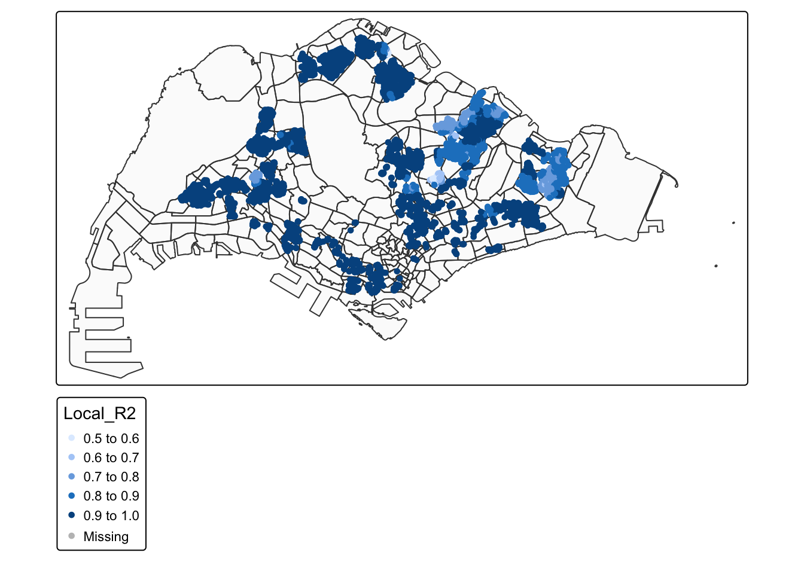
tmap_mode("plot")The Local \(R^2\) map shows that the adaptive GWR explains condo prices very well in most neighbourhoods. Darker blue clusters (Local \(R^2\) between 0.8 and 1.0) dominate the island, meaning the local regressions capture more than 80% of price variation in these areas. Here, the chosen structural and accessibility variables provide an excellent description of market behaviour and the global conclusions are strongly supported.
Lighter patches (Local \(R^2\) between 0.5 and 0.7) appear only in a few planning subzones. In these locations the model leaves more unexplained variation, suggesting that additional local factors such as project specific amenities, tenure mix, redevelopment expectations, or micro environmental qualities may be important. These areas are prime candidates for further refinement, either by enriching the covariate set or exploring alternative spatial scales. Overall, the map confirms that the adaptive GWR greatly improves explanatory power across Singapore while also revealing a small number of neighbourhoods where current predictors are less adequate and targeted model extensions are warranted.
10.3.3 Visualising coefficient estimates
Coefficient maps reveal how the marginal effect of each predictor varies across space. By plotting estimates together with their uncertainty metrics when needed, we distinguish robust spatial trends from noise. The goal is not decoration but decision support. Positive and negative zones guide policy interpretation, for example where proximity to transit associates with larger premiums or where park access effects attenuate. Side by side arrangements facilitate comparison across variables and between fixed and adaptive bandwidths, helping to identify consistent patterns and locations where model assumptions warrant further scrutiny.
tmap_mode("plot")
DIST_MRT_M_SE <- tm_shape(mpsz)+
tm_polygons(alpha = 0.1) +
tm_shape(analysis.sf.adaptive) +
tm_dots(col = "DIST_MRT_M_SE",
border.col = "gray60", border.lwd = 1) +
tm_view(set.zoom.limits = c(11,14))
DIST_MRT_M_TV <- tm_shape(mpsz)+
tm_polygons(alpha = 0.1) +
tm_shape(analysis.sf.adaptive) +
tm_dots(col = "DIST_MRT_M_TV",
border.col = "gray60", border.lwd = 1) +
tm_view(set.zoom.limits = c(11,14))
# … build DIST_MRT_M_SE and DIST_MRT_M_TV exactly as you have …
tmap_arrange(DIST_MRT_M_SE, DIST_MRT_M_TV, asp = 1, ncol = 2, sync = TRUE)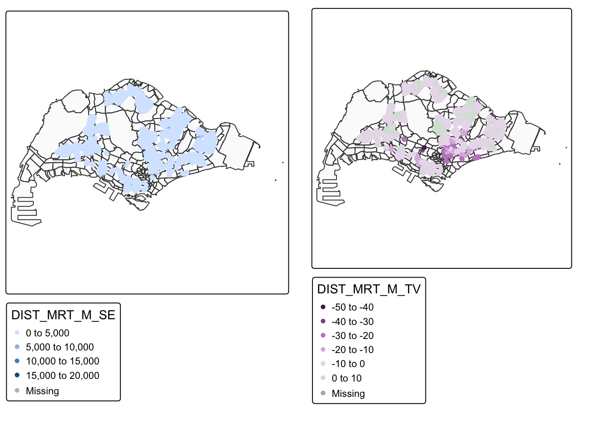
tmap_mode("plot")The paired maps show both the precision and the strength of the local MRT effect. On the left, most standard errors for the MRT distance coefficient are small and spatially even, so local estimates are quite precise across the island. Larger standard errors (SE) only appear in a few peripheral clusters where data are sparse. On the right, local \(t\) values are strongly negative over wide areas, confirming that greater distance from MRT stations is associated with significantly lower resale prices in most neighbourhoods. Small or near zero \(t\) values in a few zones indicate weaker and possibly unstable MRT effects there. Together, these maps suggest that MRT accessibility is a robust and spatially pervasive price driver, but its influence is not uniform, so transport planning and valuation should account for local variation in how strongly buyers capitalise rail access.
10.4 Case studies of localised HDB re-sale price dynamics: Tampines
What makes Tampines an instructive microcosm for spatial heterogeneity in HDB resale prices is its mix of mature estates, transit connectivity, town centre amenities, and green assets, all within a clear planning area boundary. This case study leverages the adaptive GWR output prepared earlier to examine how explanatory power varies locally and where model fit strengthens or weakens. We isolate the planning area, retain only observations located within it, visualise Local\(R^2\) patterns to reveal intra town structure, and summarise distributional properties for transparent reporting. The objective is twofold. First, to translate city scale diagnostics into neighbourhood scale insights that aid interpretation. Second, to establish a reproducible template for other towns under identical data and methods.
10.4.1 Selecting the Tampines planning area polygon
This section extracts the Tampines polygon from the Master Plan layer using its planning area field, preserving CRS and geometry validity established earlier. The result is a single, auditable spatial unit that constrains all joins and overlays. By fixing the study footprint at the outset, we prevent leakage from adjacent towns, maintain comparability with official statistics, and ensure that any localised signal we observe later is not an artefact of inconsistent geography but a genuine characteristic of Tampines.
# --- 1) Select the Tampines planning area polygon ------------------------------
# (Common MP14 fields are PLN_AREA_N (planning area) and SUBZONE_N (subzone).)
tampines_pa <- mpsz %>%
filter(PLN_AREA_N == "TAMPINES")10.4.2 Retaining only HDB resale points inside Tampines
Start with the data that matter most for inference. We intersect the adaptive GWR results with the Tampines polygon to keep only transactions whose coordinates fall within the planning area. This step aligns attributes such as Local R² with the town specific sample, removes off boundary outliers, and guarantees that subsequent summaries reflect the population of interest. The operation also preserves row integrity for reproducibility, since no recalculation of GWR occurs here. The outcome is a clean sf layer of Tampines observations ready for mapping and statistics, with geometry driven selection ensuring methodological coherence.
# --- 2) Keep only condo points that fall inside Tampines -----------------------
# Our GWR results were attached to `condo_resale.sf.adaptive` and include `Local_R2`.
tampines_pts <- analysis.sf.adaptive[tampines_pa, , op = st_within]10.4.3 Visualising Tampines boundary with points coloured by Local \(R^2\)
See the pattern before measuring it. This visualization overlays the Tampines boundary and plots each retained transaction coloured by Local \(R^2\) using quantile classes and an internal legend. The map exposes pockets where the model explains a larger share of variance, often near strong accessibility or amenity gradients, and areas where fit attenuates, suggesting missing predictors or scale mismatch. Using a consistent palette and zoom limits supports side by side comparison with other towns. The figure is not decorative. It is a diagnostic surface that guides targeted refinement and grounds narrative claims in observable spatial structure.
# --- 3) Visualise: Tampines boundary + points coloured by Local R² -------------
tmap_mode("plot")
tm_shape(tampines_pa) +
tm_polygons(fill_alpha = 0.1) +
tm_shape(tampines_pts) +
tm_dots(
fill = "Local_R2", # tmap v4: 'fill' controls symbol fill colour
col = "grey30", # thin outline
size = 0.6,
fill.scale = tm_scale(
n = 7,
style = "quantile" # consistent with the tutorial’s quantile breaks
),
fill.legend = tm_legend(title = "Local R²")
) +
tm_view(set_zoom_limits = c(11, 14))
tmap_mode("plot")10.4.4 Summarising Local \(R^2\) for Tampines
Definition first. Local \(R^2\) is the proportion of variance explained by each local regression at an observation. This subsection reports n, min, quartiles, median, mean, and max for Local \(R^2\) within Tampines, providing a compact distributional audit. High upper quartile with wide spread signals heterogeneity in model adequacy across micro locations. Narrow spread around a moderate central tendency indicates more uniform performance. These statistics will be cited in Section 10 discussion to justify whether additional neighbourhood variables, alternative bandwidths, or complementary models are warranted for Tampines and, by extension, for comparable new towns.
# --- 4) Summarise Local R² for Tampines ----------------------------------------
tampines_r2_summary <- tampines_pts %>%
st_drop_geometry() %>%
summarise(
n = dplyr::n(),
r2_min = min(Local_R2, na.rm = TRUE),
r2_q1 = quantile(Local_R2, 0.25, na.rm = TRUE),
r2_med = median(Local_R2, na.rm = TRUE),
r2_mean= mean(Local_R2, na.rm = TRUE),
r2_q3 = quantile(Local_R2, 0.75, na.rm = TRUE),
r2_max = max(Local_R2, na.rm = TRUE)
)
tampines_r2_summary n r2_min r2_q1 r2_med r2_mean r2_q3 r2_max
1 712 0.6852392 0.8231366 0.8756293 0.8703175 0.9506585 0.9651716The updated Local R² results for Tampines show that the adaptive GWR still fits very well but with more variation than in the smaller earlier sample. Across 712 condominiums, Local R² ranges from about 0.685 to 0.965 with a median around 0.876 and upper quartile near 0.951.
On the map, darker blue clusters in the north west and south east indicate locations where the model explains more than 0.95 of local price variation. Here the hedonic predictors such as floor level, age and accessibility capture condominium prices extremely well. Lighter areas in the central belt correspond to Local R² around 0.75 to 0.85, meaning that prices there depend more on factors not included in the model, for example project specific facilities or micro environment qualities.
Overall, the adaptive geographically weighted regression (adaptive GWR) model remains highly reliable for Tampines, but the central neighbourhoods merit further refinement or additional covariates to fully explain local price dynamics.
11 Discussion of Research Questions
11.1 RQ1: Structural attributes and resale price
The global Multiple Linear Regression indicates that structural characteristics are strongly and systematically related to resale price. Floor level has a large positive coefficient of about 5,800 dollars per storey, with a highly significant p value. This confirms a clear premium for higher units, consistent with better views, privacy, and reduced traffic noise.
Age in 2025 shows a similarly strong but negative effect of about 5,400 dollars per additional year. Newer blocks therefore command higher resale prices even after controlling for location and amenities. Remaining lease was dropped from the final specification because it is almost perfectly correlated with age, which created redundancy and made its coefficient unstable. Once age is retained, remaining lease contributes no additional explanatory power and its p value becomes very high.
Overall, RQ1 is answered affirmatively. Structural factors, in particular vertical position and building age, are highly significant and economically meaningful determinants of resale price in the study window. The model suggests that buyers pay sizeable premiums for newer and higher units over otherwise similar flats.
11.2 RQ2: Locational attributes and resale price
The same regression highlights several important locational drivers. Distance to the Central Business District carries one of the largest standardised effects. Each additional metre from the central area reduces predicted price by roughly 20 dollars, all else equal. Distance to the nearest MRT station has a sizeable negative coefficient of about 57 dollars per metre, confirming that rail accessibility is capitalised strongly into prices.
Other facilities show more nuanced patterns. Greater distance from eldercare centres, hawker centres and shopping malls is associated with lower prices, indicating that proximity to these amenities generally enhances value. In contrast, distance to supermarkets exhibits a small but positive coefficient, suggesting that in some locations buyers are willing to pay slightly more to live further from busy retail clusters once other amenities are controlled. Distance to elite primary schools has a small positive coefficient, implying that most of the schooling effect is captured instead by the count variables.
The counts of nearby facilities also matter. Each additional kindergarten within 350 metres increases predicted price by roughly 10,000 dollars, while each additional primary school within 1,000 metres reduces price by more than 11,000 dollars. More bus stops within 350 metres are associated with higher prices, whereas a denser supply of childcare centres slightly lowers prices. Together, these results suggest that buyers value diverse early childhood options and good public transport, but may discount locations with very intense primary school or childcare activity, possibly due to congestion and noise.
Hence RQ2 is also answered positively. Multiple dimensions of accessibility and local service mix are significantly associated with resale price, and their marginal effects are both statistically strong and substantively large.
11.3 RQ3: Spatial variation in associations
Geographically weighted regression reveals that these relationships vary substantially across space. For each predictor, local coefficients span wide ranges and often change sign. For example, the floor level premium has a median local effect of about 4,600 dollars but ranges from about 1,700 to more than 10,800 dollars. In some peripheral estates buyers pay only modest premiums for height, whereas in selected cores the premium per storey is very large, perhaps reflecting views over parks or waterfronts.
The age effect shows even stronger non stationarity. Local coefficients are strongly negative in many subzones, reinforcing a preference for newer blocks, but turn positive in a few neighbourhoods where older estates may be more centrally located or perceived as more spacious. Similar spatial variability occurs for distances to MRT stations, malls and schools, with some areas showing strong negative effects and others small or even positive effects.
These patterns confirm that the global regression summarises only an average response. In reality, the hedonic trade offs between structure, accessibility and surrounding services differ markedly by neighbourhood. RQ3 is therefore answered: the associations identified in RQ1 and RQ2 clearly vary across space, and the geographically weighted model provides direct evidence of this spatial heterogeneity.
11.4 RQ4: Model fit and residual behaviour
Comparison of diagnostics between the global MLR and the adaptive geographically weighted regression shows a substantial improvement in goodness of fit and residual properties. The global model achieves R squared of about 0.761 with adjusted R squared essentially identical, indicating that about 76 percent of price variance is explained by the common set of predictors. However, residual plots show curvature in the residual versus fitted relationship and increasing spread at higher fitted values, signalling some non linearity and mild heteroscedasticity.
Spatial diagnostics reveal more serious departures. The residual map exhibits clear clusters of over prediction and under prediction, and the Monte Carlo Moran I statistic of about 0.33 with a p value effectively zero confirms strong positive spatial autocorrelation in the residuals. This violates the independence assumption and implies that some location specific effects remain unmodelled.
The adaptive geographically weighted regression reduces these problems markedly. Global R squared rises to about 0.96 and adjusted R squared to about 0.954, while residual sum of squares drops by more than 80 percent. Information criteria such as AICc and BIC are substantially lower, even after accounting for the increased effective number of parameters. Local R squared values are mostly between 0.8 and 1.0, with only small pockets around 0.6 to 0.7. Residual maps become visually less structured, and spatial clustering of large errors is greatly reduced.
Consequently, RQ4 is answered affirmatively. The geographically weighted model materially improves overall fit and offers more realistic residual behaviour relative to the global MLR baseline, supporting its use as the main explanatory tool for spatial price variation.
11.5 RQ5: Local effects and practical implications
Local R squared and coefficient maps, together with planning area summaries, highlight where effects are notably stronger or weaker and suggest implications for different stakeholders.
In Tampines, Local R squared ranges from about 0.69 to 0.97 with a median around 0.88 and an upper quartile above 0.95. The highest values cluster near Tampines Central where MRT, bus interchanges and regional malls are concentrated. Here the model explains almost all local price variation, and coefficients on accessibility variables are strong and stable. For buyers and valuers, this means price expectations in central Tampines can be forecast with high confidence from the structural and locational attributes in the model. For planners, it suggests that transport and town centre investments in this area are strongly capitalised into resale values.
In contrast, parts of the central belt of Tampines show lower Local R squared around 0.7 to 0.8. These neighbourhoods likely involve additional influences that are not captured by the current predictors, such as block specific facilities, noise exposure or detailed renewal plans. For these micro markets, the model still performs reasonably well but cannot fully substitute for case specific information.
The maps of MRT distance standard errors and \(t\) values further emphasise that rail access is a robust and spatially pervasive driver. Over large parts of the island, the local t statistic for distance to MRT is strongly negative, and the associated standard errors are small, indicating precise and significant price penalties for being further from stations. Only a few fringe zones show weaker or unstable MRT effects. This reinforces the view that improvements to rail access will generally enhance resale values, but the magnitude of the gain will differ by planning area.
12 Conclusion
This study develops a complete spatial hedonic workflow for public housing resale analysis, moving from data preparation and exploratory mapping through diagnostic checking, global calibration, and location specific modelling using geographically weighted regression. The framework is intentionally transparent and modular, so that analysts can substitute alternative variables, spatial weights, or bandwidth choices while retaining a clear sequence of steps and checks.
Beyond its immediate application to 4 room resale transactions, the workflow provides a reusable template for agencies and valuers who require defensible, map ready evidence on how neighbourhood context relates to housing outcomes. Each stage produces outputs that can be communicated directly to non technical audiences, for example residual maps to flag areas where prevailing valuation rules are unreliable, or local goodness of fit summaries that highlight where further field investigation is warranted.
Several limitations point to promising directions for future work. The design is cross sectional, so temporal dynamics and policy shocks are not yet incorporated. Important unobserved features such as interior quality, micro noise exposure, and detailed project characteristics remain outside the current variable set. Extending the framework to panel data, richer administrative sources, or combined use with machine learning methods that respect spatial structure would deepen understanding of market behaviour.
Overall, the project contributes a rigorous, practice orientated methodology that can be adopted and adapted by planners, valuers, and researchers who wish to integrate spatial analytics and geographically weighted regression into routine housing market assessment.
13 References
Brunsdon, C, Fotheringham, A S and Charlton, M 1996, Geographically weighted regression: a method for exploring spatial nonstationarity, Geographical Analysis, vol 28, no 4, pp 281 to 298.
Brunsdon, C, Fotheringham, A S and Charlton, M 1999, Some notes on parametric significance tests for geographically weighted regression, Journal of Regional Science, vol 39, no 3, pp 497 to 524.
Creative Campus 2024, Best primary schools in Singapore 2024, Creative Campus: Learning with Latitude, viewed 16 November 2025, https://www.creativecampus.com.sg/best-primary-schools-in-singapore-2024.
EdgeProp Singapore 2024, Analysis: the increasing appeal of four room HDB flats, EdgeProp Singapore, 18 February, viewed 16 November 2025, https://www.edgeprop.sg/property-news/analysis-increasing-appeal-four-room-hdb-flats.
Gollini, I, Lu, B, Charlton, M, Brunsdon, C and Harris, P 2015, GWmodel: an R package for exploring spatial heterogeneity using geographically weighted models, Journal of Statistical Software, vol 63, no 17, pp 1 to 50.
Kam, T S 2022a, Calibrating hedonic pricing model for private highrise property with GWR method, in R for Geospatial Data Science and Analytics, Singapore Management University, viewed 16 November 2025, https://r4gdsa.netlify.app/chap13.html.
Kam, T S 2022b, Calibrating hedonic pricing model for private highrise property with GWR method, ISSS626 in class exercise 7, Geospatial Analytics and Applications, School of Computing and Information Systems, Singapore Management University, viewed 16 November 2025, https://isss626-ay2025-26aug.netlify.app/in-class_ex/in-class_ex07/in-class_ex07-gwr.
Kam, T S 2025a, In class exercise 8: data preparation for take home exercise 3, ISSS626 in class exercise 8, Geospatial Analytics and Applications, School of Computing and Information Systems, Singapore Management University, viewed 16 November 2025, https://isss626-ay2025-26aug.netlify.app/in-class_ex/in-class_ex08/in-class_ex08.
Kam, T S 2025b, Lesson 7: geographically weighted regression, ISSS626 Geospatial Analytics and Applications module notes, School of Computing and Information Systems, Singapore Management University, viewed 16 November 2025, https://isss626-ay2025-26aug.netlify.app/lesson/lesson07/lesson07-gwr.
Lu, B, Harris, P, Charlton, M and Brunsdon, C 2014, The GWmodel R package: further topics for exploring spatial heterogeneity using geographically weighted models, Geo spatial Information Science, vol 17, no 2, pp 85 to 101.
Matthews, S A and Yang, T C 2012, Mapping the results of local statistics: using geographically weighted regression, Demographic Research, vol 26, pp 151 to 166.
Mennis, J 2006, Mapping the results of geographically weighted regression, The Cartographic Journal, vol 43, no 2, pp 171 to 179.